Lecture2.pdf (หน้า 1-49) · 2603520 Deep Learning
บทนี้ตอบคำถามว่า "ทำไมต้องมี Neural Network ทั้งที่มี Logistic Regression แล้ว" จากนั้นค่อย ๆ สร้างความเข้าใจตามลำดับสไลด์ของอาจารย์: นิวรอนจริงในสมอง → นิวรอนเทียม → ประวัติ 3 ยุค → สัญกรณ์ (\(\theta\), layer, node) → logic gate จาก neuron เดียว → พีชคณิตเชิงเส้น (vector/matrix) แบบเริ่มจากศูนย์ → การเขียนสมการให้เป็นเมทริกซ์ (vectorization) พร้อมโค้ด numpy ของสไลด์ทุกบล็อก → จบด้วยการคำนวณ Forward Computation ด้วยมือทั้งโครงข่าย.
ใน Lesson 1 เราทำ decision boundary ที่ไม่เป็นเส้นตรงด้วยการสร้าง feature เพิ่มด้วยมือ เช่น \(x_1^2,\ x_1x_2\) แล้วโยนเข้า logistic regression (จำวงกลมรัศมี 2 ได้ไหม). วิธีนี้ใช้ได้สบายกับ feature 2–3 ตัว แต่พอ feature ตั้งต้นเยอะขึ้น จำนวนเทอมที่ต้องสร้างจะระเบิดเร็วมากจนทำไม่ไหว — นี่คือปัญหาที่อาจารย์ใช้เปิดบท.
ข้อมูล spiral ในสไลด์มีจุดแดงกับจุดน้ำเงินพันกันเป็นเกลียว — เส้นตรงเส้นเดียวแยกไม่ได้แน่นอน อาจารย์จึงเขียนสมมติฐานแบบโพลิโนเมียลให้ดูว่าต้องใช้เทอมอะไรบ้าง: \(g(\theta_0+\theta_1x_1+\theta_2x_2+\theta_3x_1x_2+\theta_4x_1^2+\dots+\theta_9x_2^3)\) — แค่ 2 feature กับดีกรี 3 ก็มีถึง 9 เทอมแล้ว. จากนั้นคำถามสำคัญคือ "ถ้ามี \(x_1,x_2,\dots,x_{100}\) ล่ะ" คำตอบบนสไลด์คือ 5,150 features สำหรับดีกรี 2 เท่านั้น. ข้อสรุปที่อาจารย์ทำสีไว้คือ Explicit polynomial feature expansion becomes impractical as the number of input features and polynomial degree increase — แปลว่า "การแจกแจงเทอมโพลิโนเมียลออกมาตรง ๆ ใช้การไม่ได้จริงเมื่อจำนวน feature และดีกรีเพิ่มขึ้น" คำว่า explicit สำคัญ: ไม่ได้บอกว่า non-linear ทำไม่ได้ แต่บอกว่าการเขียนเทอมเองทีละตัวต่างหากที่พัง.
มีตัวแปรกี่ตัวก็ได้เทอมเท่านั้น
$$n = 100$$ตัวแปรแต่ละตัวยกกำลังสองได้ 1 เทอม
$$n = 100$$คือ "เลือกตัวแปร 2 ตัวจาก 100 ตัว" = จำนวนคู่ที่ไม่สนลำดับ (เพราะ \(x_1x_2\) กับ \(x_2x_1\) คือเทอมเดียวกัน)
$$\binom{100}{2} = \frac{100 \times 99}{2} = 4950$$สูตรทั่วไป: \(\;2n + \dfrac{n(n-1)}{2}\;\) และย้ำว่านี่คือดีกรี 2 เท่านั้น — เทอมไขว้ \(\binom{n}{2}\) โตแบบกำลังสองตาม \(n\) ถ้าขึ้นดีกรี 3 จะโตเป็นกำลังสาม.
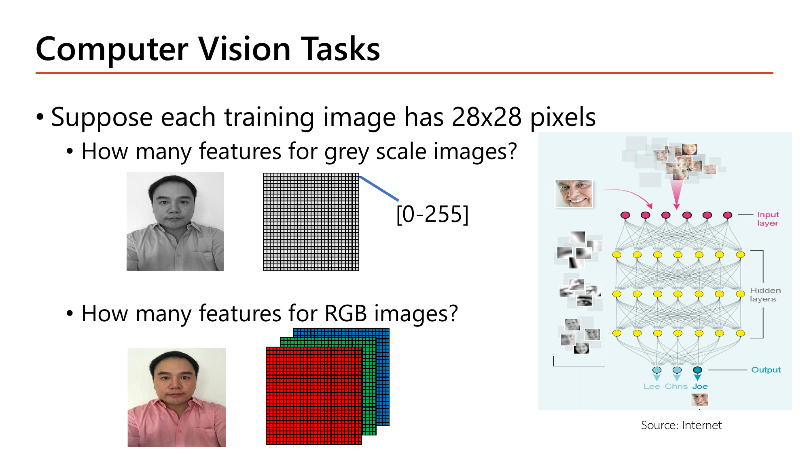
อาจารย์ถามต่อด้วยตัวเลขจริงของงาน computer vision: ภาพฝึกขนาด 28×28 พิกเซล แต่ละพิกเซลเก็บค่าความสว่างในช่วง [0–255] และ "1 พิกเซล = 1 feature" ดังนั้นภาพขาวดำ 1 ภาพให้ \(28\times28 = 784\) features; ถ้าเป็นภาพสี RGB จะมี 3 ค่าต่อพิกเซล (แดง/เขียว/น้ำเงิน) จึงได้ \(784\times3 = 2{,}352\) features. ทีนี้ลองเอา 2,352 ไปเข้าสูตรเมื่อกี้: \(2(2352)+\binom{2352}{2} = 4704 + 2{,}764{,}776 = 2{,}769{,}480\) เทอม — เกือบ 2.8 ล้านพารามิเตอร์เฉพาะดีกรี 2 ของภาพเล็ก ๆ ภาพเดียว. โครงข่ายทางขวาของสไลด์แสดงทางออก: ป้อนพิกเซลดิบเข้า input layer แล้วให้ hidden layers เรียน feature เอง (ขอบ → ชิ้นส่วนใบหน้า → ตัวบุคคล) ก่อนออกที่ node ชื่อ Lee / Chris / Joe — เราไม่ต้องบอกเครื่องเลยว่าให้คูณพิกเซลไหนกับพิกเซลไหน.
อ่านเป็นภาษาคน: "ยิ่ง feature เยอะ การสร้างเทอมไขว้เองยิ่งเป็นไปไม่ได้ ⇒ ให้โมเดลสร้าง feature ที่ไม่เชิงเส้นเองดีกว่า" — และโมเดลที่ทำแบบนั้นคือ neural network
ก่อนจะมีสูตร อาจารย์ปูเรื่องเล่าก่อนว่า ANN เกิดจากการเลียนแบบสมอง แล้วค่อยกลายเป็นเครื่องมือคณิตศาสตร์. สี่หน้าถัดไปคือเรื่องเล่านั้น และเป็นที่มาของคำศัพท์ที่จะใช้ทั้งเทอม.
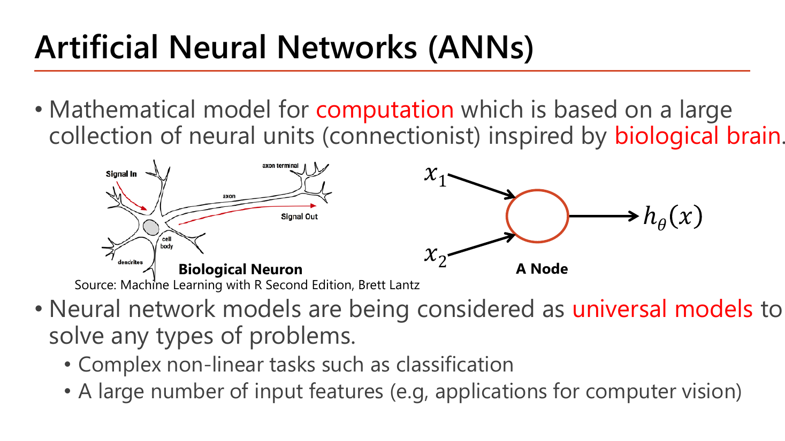
นิยามที่อาจารย์ให้คือ ANN เป็น "Mathematical model for computation which is based on a large collection of neural units (connectionist) inspired by biological brain" — อ่านทีละคำ: มันคือแบบจำลองทางคณิตศาสตร์สำหรับการคำนวณ ที่ประกอบจากหน่วยย่อยจำนวนมาก (คำว่า connectionist แปลว่า "ความฉลาดอยู่ที่การเชื่อมต่อระหว่างหน่วย ไม่ได้อยู่ที่หน่วยเดียว") และได้แรงบันดาลใจจากสมองจริง (inspired by ≠ จำลองสมองจริง — ข้อสอบชอบดักตรงนี้). เทียบภาพซ้าย-ขวาให้ตรงกันได้ทันที: dendrite ที่รับ "Signal In" ↔ ลูกศร \(x_1, x_2\) ที่เข้า node; cell body ที่รวมสัญญาณ ↔ การบวกถ่วงน้ำหนักในวงกลม; axon ที่ส่ง "Signal Out" ↔ ลูกศรออก \(h_\theta(x)\). อาจารย์เสริมว่าโมเดลนี้ถูกมองเป็น universal models ที่แก้ปัญหาได้ทุกประเภท โดยยกสองงานที่มันเด่นเป็นพิเศษ: งาน classification ที่ไม่เชิงเส้นซับซ้อน และงานที่มี input feature จำนวนมหาศาล (เช่น computer vision ที่เพิ่งนับได้ 2,352 features จากภาพเล็ก ๆ ในหน้า 3).
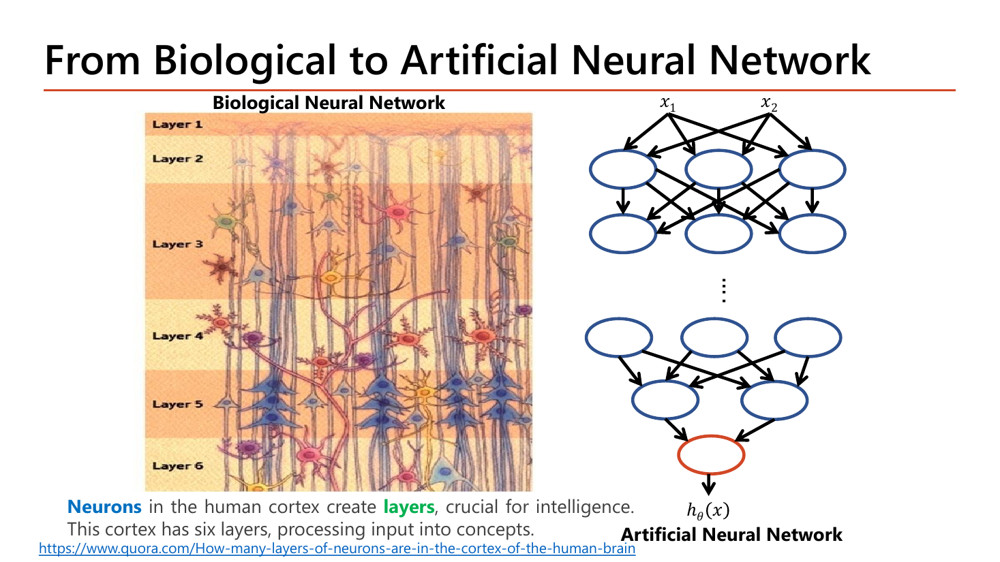
ประโยคที่ทำสีไว้คือ Neurons in the human cortex create layers, crucial for intelligence. ภาพตัดขวางเปลือกสมอง (cortex) ถูกกำกับเป็น Layer 1 ถึง Layer 6 — อาจารย์ชี้ว่าเปลือกสมองมนุษย์มี 6 ชั้น และแต่ละชั้น "ประมวลผล input ให้กลายเป็นแนวคิด (concepts)" ทีละขั้น. นี่คือเหตุผลว่าทำไมโครงข่ายเทียมถึงถูกจัดเป็น "ชั้น" ตามกัน: ชั้นแรกรับ \(x_1,x_2\) ดิบ ชั้นถัด ๆ ไปรับผลลัพธ์ของชั้นก่อนหน้า ไม่ใช่รับ input ดิบอีก จนถึง node สุดท้ายที่ให้ \(h_\theta(x)\). คำว่า layer ที่จะเจอทั้งเทอมเกิดตรงนี้ และคำว่า "deep" ใน deep learning ก็คือ "มี layer หลายชั้น" นั่นเอง.
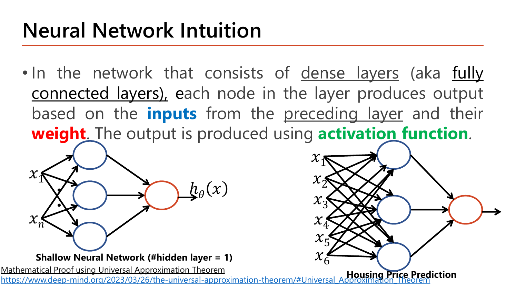
หน้านี้คือหัวใจของบท: ในโครงข่ายที่ประกอบด้วย dense layers (หรืออีกชื่อว่า fully connected layers — ทุก node ของชั้นก่อนหน้าต่อเข้าทุก node ของชั้นถัดไป ไม่มีเส้นไหนขาด) แต่ละ node จะสร้าง output จาก inputs ของชั้นก่อนหน้า คูณกับ weight ของมัน แล้วส่งผ่าน activation function. สามคำนี้คือสามส่วนประกอบของ node ทุกตัวในวิชานี้ — จำลำดับให้แม่น: รับ input → คูณ weight แล้วบวกกัน → ผ่าน activation. ตัวอย่าง Housing Price Prediction ทางขวานับได้จริง: input 6 ตัว (\(x_1\) ถึง \(x_6\) เช่น ขนาดบ้าน จำนวนห้องนอน ทำเล ฯลฯ) ต่อแบบ fully connected เข้า hidden 3 node ⇒ เส้นเชื่อม \(6\times3 = 18\) เส้น บวก bias อีก 3 ตัว = 21 พารามิเตอร์ในชั้นที่ 1; แล้ว hidden 3 node ต่อเข้า output 1 node ⇒ \(3+1 = 4\) พารามิเตอร์ รวมทั้งโครงข่าย 25 ตัว ซึ่งน้อยกว่าการแตกโพลิโนเมียลมหาศาล. อาจารย์ยังกำกับไว้ว่าโครงข่ายที่มี #hidden layer = 1 เรียกว่า Shallow Neural Network และแปะลิงก์ Universal Approximation Theorem ไว้เป็นหลักฐานทางคณิตศาสตร์ว่าโครงข่ายตื้น ๆ แบบนี้ก็ประมาณฟังก์ชันต่อเนื่องได้กว้างมากแล้ว.
"เชิงเส้น (linear)" กับ "ไม่เชิงเส้น (nonlinear)" ต่างกันยังไง และทำไม activation function ถึงจำเป็น
ฟังก์ชันเชิงเส้นคือฟังก์ชันหน้าตา \(f(x)=ax+b\) — วาดแล้วได้เส้นตรงเสมอ เช่น \(f(x)=2x+1\): ใส่ \(x=0\) ได้ 1, ใส่ \(x=1\) ได้ 3, ใส่ \(x=2\) ได้ 5 (เพิ่มทีละ 2 คงที่).
ทีนี้ลองต่อสองชั้นแบบไม่มี activation: ชั้นแรก \(a = 2x+1\) ชั้นสอง \(h = 3a-2\). แทนค่า: \(h = 3(2x+1)-2 = 6x+1\) — ยังเป็นเส้นตรงอยู่ดี! ตรวจด้วยตัวเลข \(x=2\): \(a = 5,\ h = 13\) และ \(6(2)+1 = 13\) ตรงกัน. นี่คือเหตุผลว่าต่อชั้นเชิงเส้นกี่ชั้นก็ยังได้เส้นตรงเส้นเดียว ไม่ได้อะไรเพิ่มเลย.
ถ้าใส่ฟังก์ชันโค้ง ๆ (nonlinear) คั่นระหว่างชั้น เช่น sigmoid \(g(z)=\frac{1}{1+e^{-z}}\) ผลลัพธ์จะไม่ยุบเป็นเส้นตรงอีก: \(h = 3\,g(2x+1)-2\) ที่ \(x=0\) ได้ \(3(0.731)-2 = 0.193\), ที่ \(x=1\) ได้ \(3(0.953)-2 = 0.858\), ที่ \(x=2\) ได้ \(3(0.993)-2 = 0.980\) — ส่วนต่างไม่คงที่ (0.665 แล้ว 0.122) นั่นคือ "โค้ง" จริง. ดังนั้น activation function ไม่ใช่ของประดับ แต่เป็นสิ่งเดียวที่ทำให้การซ้อนชั้นมีความหมาย.
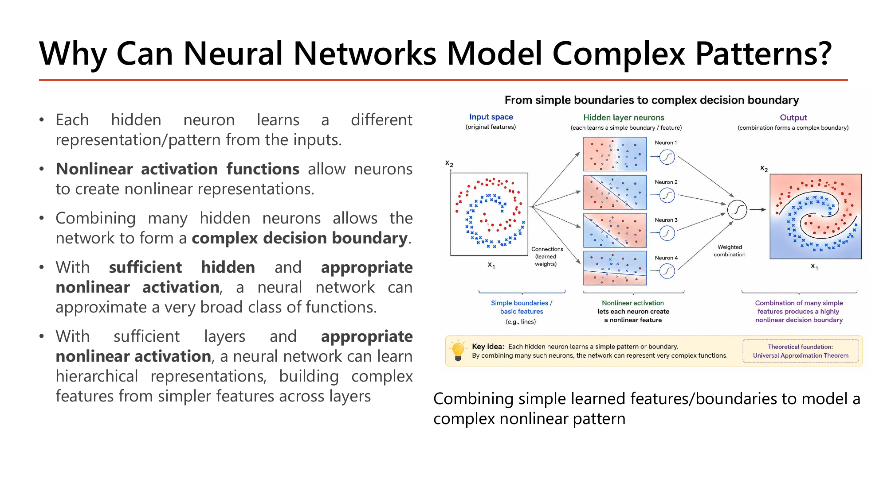
หน้านี้ตอบคำถาม "ทำไมมันถึงเวิร์ก" ด้วย 5 ข้อ ซึ่งควรอ่านเป็นลำดับเหตุผลต่อกัน ไม่ใช่ 5 ข้อแยกกัน. (1) hidden neuron แต่ละตัวเรียน representation/pattern คนละแบบ จาก input เดียวกัน — ในภาพคือ Neuron 1 ถึง Neuron 4 ที่แต่ละตัวขีดเส้นแบ่งพื้นที่คนละมุมของ spiral เดียวกัน. (2) Nonlinear activation functions ทำให้นิวรอนสร้าง representation ที่ไม่เชิงเส้นได้ (ถ้าไม่มีมัน ทุกอย่างยุบเป็นเส้นตรงตามที่พิสูจน์ไปในกล่อง "ต้องรู้ก่อน"). (3) เอา hidden neuron หลาย ๆ ตัวมารวมกัน (weighted combination) จึงเกิด complex decision boundary — ในภาพคือพื้นที่แดง/น้ำเงินที่ม้วนเป็นเกลียวตามข้อมูลจริง. (4) ถ้ามี hidden unit เพียงพอ และ activation ไม่เชิงเส้นที่เหมาะสม โครงข่ายประมาณฟังก์ชันได้กว้างมาก (นี่คือใจความของ Universal Approximation Theorem ที่ลิงก์ไว้หน้า 6). (5) ถ้ามี layer เพียงพอ โครงข่ายจะเรียน hierarchical representations คือสร้าง feature ซับซ้อนจาก feature ง่าย ๆ ไล่ขึ้นทีละชั้น (ขอบ → ตา/จมูก → ใบหน้า) ซึ่งคือเหตุผลของคำว่า "deep". สังเกตคำเงื่อนไขที่อาจารย์ทำตัวหนา: sufficient (พอเพียง) และ appropriate (เหมาะสม) — ทฤษฎีไม่ได้รับประกันว่าโครงข่ายเล็ก ๆ หรือ activation อะไรก็ได้จะทำได้.
ไอเดียหลัก: นักวิจัยพยายามสร้าง "นิวรอนเทียม" — หน่วยเล็ก ๆ ที่รับ input หลายตัว รวมแล้วตัดสินใจว่าจะ "ยิง (1)" หรือ "ไม่ยิง (0)". อาจารย์เล่าเป็น 3 ช่วงเวลา และแต่ละช่วงเพิ่มความสามารถทีละขั้น ซึ่งเป็นลำดับที่ข้อสอบชอบถามว่า "ใครทำอะไร ปีไหน แก้ปัญหาอะไรได้/ไม่ได้".

1943 McCulloch–Pitts: อาจารย์เขียนว่าใช้ simplified model นี้ โครงข่ายนิวรอนเทียมสามารถคำนวณ logical proposition ใดก็ได้ที่เราต้องการ. คำว่า proposition (ประพจน์) คือประโยคที่มีค่าความจริงจริง/เท็จเท่านั้น เช่น "ฝนตก และ ถนนลื่น". นิยามของนิวรอนรุ่นนี้คือ Simple model ของ biological neuron ที่มีเงื่อนไขแค่ 3 ข้อ: input เป็นแบบ binary (เปิด/ปิด) หนึ่งตัวหรือมากกว่า, output เป็น binary หนึ่งตัว, และนิวรอนจะ activate เมื่อจำนวน input ที่ active มากกว่าเกณฑ์ที่กำหนด. ไล่ตามภาพสี่แบบที่สไลด์ยกมา: \(C = A\) คือนิวรอน C ที่ยิงเมื่อ A ยิง (ส่งต่อค่าเฉย ๆ); \(C = A \wedge B\) ต้องให้ทั้ง A และ B ยิงพร้อมกัน (เกณฑ์ = 2 input); \(C = A \vee B\) แค่ตัวใดตัวหนึ่งยิงก็พอ (เกณฑ์ = 1 input); และ \(C = A \wedge \neg B\) ใช้เส้นเชื่อมแบบ ยับยั้ง (inhibitory) จาก B ซึ่งบล็อกไม่ให้ C ยิงเมื่อ B ทำงาน. สังเกตว่ารุ่นนี้ ยังไม่มี weight เป็นตัวเลข — ปรับได้แค่ "เกณฑ์จำนวน input" เท่านั้น.

1957 Perceptron: ก้าวสำคัญคือหน่วยเดียวที่ชื่อ threshold logic unit (TLU) ใช้ทำ binary classification แบบเชิงเส้นง่าย ๆ ได้ อาจารย์เน้นหัวข้อย่อยว่าเป็น Binary Classification using TLU. รายละเอียดที่ต่างจากรุ่น 1943 มี 3 ข้อ: (ก) input เป็นค่าตัวเลขจริงได้แล้ว (จะ binary หรือ continuous ก็ได้) แต่ output ยังเป็น binary; (ข) เส้นเชื่อมแต่ละเส้นมี weight ของตัวเอง (\(w_1,w_2,w_3\) ในภาพ) — ปรับความสำคัญของ input ทีละตัวได้; (ค) TLU เอาผลรวมถ่วงน้ำหนัก \(z = \mathbf{x}^\top\mathbf{w}\) ไปผ่าน step function แล้วให้ผลเมื่อค่าเกิน threshold ตามสูตรบนสไลด์ \(h_w(\mathbf{x}) = \text{step}(\mathbf{x}^\top\mathbf{w})\):
$$z = \mathbf{x}^\top \mathbf{w} = w_1x_1 + w_2x_2 + w_3x_3,\qquad \text{step}(z)=\begin{cases}1 & z \ge 0\\ 0 & z<0\end{cases}$$บรรทัดสรุปท้ายสไลด์คือข่าวร้ายที่ทำให้วงการหยุดชะงักไปสิบกว่าปี: Perceptron แก้ simple problems บางอย่างไม่ได้ เช่นปัญหา XOR ตามที่ Minsky และคณะแสดงไว้ในปี 1969 — คำว่า "simple" เป็นการประชด เพราะ XOR ดูง่ายมากสำหรับคน แต่ TLU ตัวเดียวทำไม่ได้จริง ๆ.

1969 MLP: คำตอบคือซ้อนชั้น. นิยามที่อาจารย์ทำสีทั้งประโยค: An MLP is composed of one input layer, one or more layers of TLUs, called hidden layers, and one final layer of TLUs called the output layer. — แปลว่า MLP = input layer 1 ชั้น + ชั้นของ TLU อีก "หนึ่งชั้นหรือมากกว่า" ที่เรียกว่า hidden layer + ชั้น TLU สุดท้าย 1 ชั้นที่เรียกว่า output layer. โครงข่ายในภาพใช้ weight เท่ากับ 1 ทุกเส้น ยกเว้น 4 เส้นที่กำกับตัวเลขไว้: \(-1.5\) และ \(-0.5\) จาก bias unit ล่างเข้าสู่ hidden สองตัว, \(-1\) จาก hidden ตัวซ้ายไปยัง output, และ \(-0.5\) จาก bias unit บนเข้าสู่ output. อีกบรรทัดที่มักถูกมองข้ามแต่สำคัญมากคือ "Loosely speaking we can call MLP even using not step function nowadays" — ทุกวันนี้เราเรียกโครงข่ายว่า MLP ได้แม้จะไม่ได้ใช้ step function แล้ว (เปลี่ยนไปใช้ sigmoid/ReLU) เพราะ step function มีอนุพันธ์เป็น 0 เกือบทุกที่ จึงเทรนด้วย gradient descent ไม่ได้ (เหตุผลเต็มอยู่ใน Lesson 3).
สมมาตรกับกรณี \((0,1)\) ทุกประการ (สูตรใช้ผลบวก \(x_1+x_2\)) ⇒ out = 1
ผลลัพธ์ \([0,1,1,0]\) = XOR พอดี. กลไกคือ hidden ขวาตอบว่า "มีอย่างน้อยหนึ่งตัวเป็น 1 ไหม" ส่วน hidden ซ้ายตอบว่า "เป็น 1 ทั้งคู่ไหม" แล้ว output เอาอันแรกลบอันหลัง = "มีอย่างน้อยหนึ่งตัว แต่ไม่ใช่ทั้งคู่".
ก่อนคำนวณอะไรได้ ต้องอ่านสัญลักษณ์ออกก่อน. สามหน้าถัดไปคือ "พจนานุกรม" ของวิชานี้ ถ้าตรงนี้ไม่แม่น ทุกสูตรใน Lesson 3–6 จะอ่านไม่ออก.
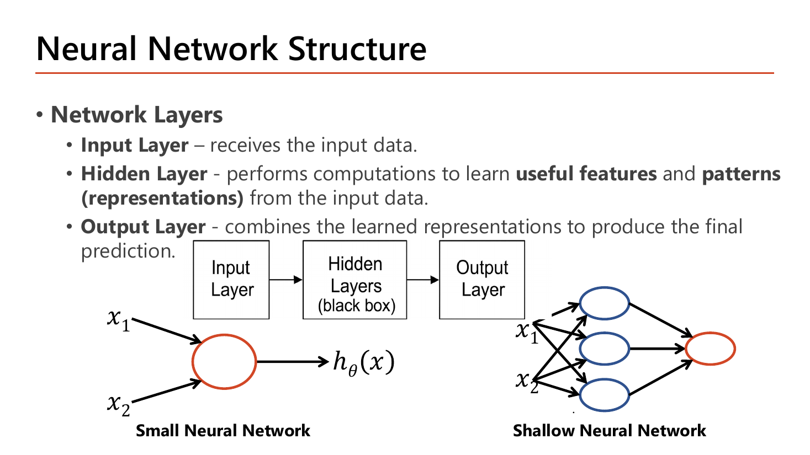
อาจารย์แบ่งหน้าที่ของ 3 ชั้นไว้ชัดเจน และนี่คือคำนิยามที่ต้องท่องได้: Input Layer ทำหน้าที่รับข้อมูลเข้า (receives the input data) — ไม่คำนวณอะไรเลย เป็นแค่ที่วางค่า \(x_1, x_2, \dots\); Hidden Layer ทำหน้าที่คำนวณเพื่อเรียน useful features และ patterns (representations) จากข้อมูล — คำว่า hidden มาจากการที่เราไม่ได้กำหนดว่ามันต้องเรียนอะไร จึงถูกเขียนกำกับในแผนภาพว่าเป็น black box; Output Layer ทำหน้าที่รวม representation ที่เรียนมาแล้วให้เป็นคำทำนายสุดท้าย. สองโครงข่ายตัวอย่างข้างล่างคือกรณีสุดขั้วสองแบบ: "Small Neural Network" ที่มี node เดียวรับ \(x_1,x_2\) แล้วออก \(h_\theta(x)\) เลย (ไม่มี hidden layer — ก็คือ regression ธรรมดา) กับ "Shallow Neural Network" ที่แทรก hidden 3 node คั่นก่อนถึง output.
![Neural Network Notation slide: a fully connected network with inputs x1 x2, hidden nodes a1[1] a2[1] a3[1] in Layer 1 and output node a1[2] in Layer 2 producing h(x), plus a magnified box showing that the bracketed superscript means the layer and the subscript means the node in that layer](../assets/slides/dl2-p12-notation-layer-node.png)
สัญกรณ์กลางของวิชาคือ \(a_{\text{node}}^{[\text{layer}]}\). ในโครงข่ายตัวอย่าง hidden layer ถูกเรียกว่า Layer 1 มี 3 node ชื่อ \(a_1^{[1]}, a_2^{[1]}, a_3^{[1]}\) และ output layer คือ Layer 2 มี node เดียวชื่อ \(a_1^{[2]}\) ซึ่งค่าของมันก็คือ \(h_\theta(x)\) นั่นเอง. จำสองข้อนี้ให้ขึ้นใจ: ตัวเลขใน วงเล็บเหลี่ยม \([\,]\) คือเลขชั้น ไม่ใช่เลขยกกำลัง (\(a_1^{[2]}\) ไม่ได้แปลว่า \(a_1\) กำลังสอง) และ input layer ไม่ถูกนับเป็น layer ที่มีพารามิเตอร์ จึงเรียกโครงข่ายนี้ว่า "2 Layers NN" ทั้งที่วาดเห็น 3 คอลัมน์.
| สัญลักษณ์ | อ่านว่า | ตัวอย่างจากสไลด์ |
|---|---|---|
| \(a_j^{[l]}\) | activation (ค่าที่ออกจาก node) ของ node ที่ \(j\) ใน layer ที่ \(l\) | \(a_2^{[1]}\) = node ตัวที่ 2 ของ layer 1 |
| \(\theta_{ij}^{[l]}\) | weight ของเส้นที่วิ่งเข้า node \(i\) ใน layer \(l\) จาก node \(j\) ใน layer \(l-1\) | \(\theta_{11}^{[1]}\): เข้า node 1 ของ layer 1 จาก \(x_1\) |
| \(x_0 = a_0^{[l]}\) | bias unit ค่าคงที่ \(+1\) เสมอ (ทำหน้าที่เดียวกับ \(\theta_0\) ใน Lesson 1) | \(\theta_{10}^{[1]}\) = weight ของ bias เข้า node 1 |
ลำดับ subscript คือ "ปลายทางก่อน ต้นทางทีหลัง" (\(i\) = ปลายทาง, \(j\) = ต้นทาง) — จุดที่คนสับสนบ่อยที่สุดและออกสอบบ่อยที่สุด
![Neural Network Notation 2 slide: the logistic hypothesis h = g(z) = 1/(1+e^-z) highlighted in yellow with z = sum of theta_i x_i, a node showing the bias unit x0 fixed at +1 with weights theta_10, theta_11, theta_12 entering node a1[1], a magnified node splitting into the weighted sum z and the activation function g, and a legend for the weight symbol theta with destination layer, source node and line labels](../assets/slides/dl2-p13-notation-bias-unit-weight.png)
อาจารย์บอกชัดว่าใช้ hypothesis function ของ logistic regression as an illustration — คือยกมาเป็นตัวอย่างประกอบเท่านั้น ไม่ได้แปลว่า node ต้องเป็น sigmoid เสมอ (Lesson 3 จะเปลี่ยนไปใช้ ReLU ฯลฯ). กรอบเหลืองบนสไลด์คือสูตรที่คุ้นจาก Lesson 1 พอดี: \(h = g(z) = \frac{1}{1+e^{-z}}\) โดย \(z=\sum_{i=0}^{n}\theta_i x_i\). สิ่งใหม่ที่หน้านี้เพิ่มมี 3 คำ: Bias Unit 𝑥0 ซึ่งอาจารย์วงเล็บภาษาไทยไว้ว่า "เป็นค่าตัวปรับ มักกำหนดค่าเท่ากับ +1" (จึงทำให้ \(\theta_0 x_0 = \theta_0\) กลายเป็นค่าคงที่ที่เลื่อนเส้นแบ่งได้); Activation Function g คือฟังก์ชันที่ครอบ \(z\) อีกที; และ Weight ซึ่งอาจารย์อธิบายวิธีอ่านสัญลักษณ์ \(\theta\) แบบละเอียด: เลขในวงเล็บเหลี่ยมบอก Destination Layer (ชั้นปลายทาง), subscript ตัวหน้าบอก Node in a Layer (node ปลายทาง) และ subscript ตัวหลังบอก Node in a Source Layer (node ต้นทาง). ดูตัวอย่างจริงในภาพ: \(\theta_{12}^{[1]}\) คือเส้นจาก \(x_2\) เข้า node ที่ 1 ของ layer 1.
สูตรสองขั้นที่จะใช้ตลอดวิชา เขียนรวมได้เป็น:
$$z_j^{[l]} = \sum_{i=0}^{n} \theta_{ji}^{[l]}\, a_i^{[l-1]}\quad(\text{ผลรวมถ่วงน้ำหนัก, เริ่มนับที่ } i=0 \text{ คือ bias}),\qquad a_j^{[l]} = g\!\left(z_j^{[l]}\right)$$สังเกตว่าดัชนีเริ่มที่ \(i=0\) ไม่ใช่ \(i=1\) เพราะรวม bias unit \(a_0=1\) ไว้ด้วย ดังนั้น จำนวนพารามิเตอร์ที่เข้า 1 node = (จำนวน node ต้นทาง) + 1 เสมอ.
layer ปัจจุบันมี 2 node ⇒ 2 แถว (แถวละ 1 node)
\(4 + 1 = 5\) คอลัมน์
กฎจำง่าย: \(\theta^{[l]}\) มีขนาด (จำนวน node ปลายทาง) × (จำนวน node ต้นทาง + 1) — เพราะเวกเตอร์ \(a^{[l-1]}\) ที่เอาไปคูณมี 5 สมาชิก (รวม bias) การคูณ \((2\times5)(5\times1)\) จึงได้ผลลัพธ์ \(2\times1\) พอดีหนึ่งค่าต่อหนึ่ง node.
หน้านี้สั้นแต่เป็นสะพานเชื่อม Lesson 1 กับ Lesson 2 ที่สำคัญมาก — และเป็นคำตอบของคำถาม "แล้วที่เรียนมาทั้งเทอมที่แล้วไปไหน".
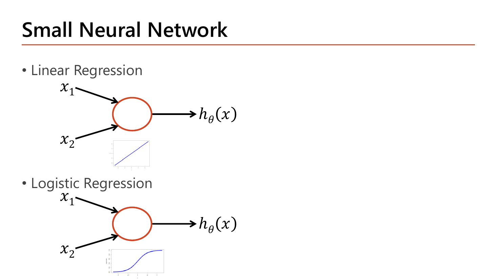
โครงข่ายสองอันบนหน้านี้หน้าตาเหมือนกันเป๊ะ: รับ \(x_1, x_2\) เข้า node เดียว แล้วออกเป็น \(h_\theta(x)\). สิ่งเดียวที่ต่างคือกราฟเล็ก ๆ ใต้ node ซึ่งบอกว่า node นั้นใช้ activation อะไร — อันบนเป็นเส้นตรง (linear regression: \(h_\theta(x)=\theta_0+\theta_1x_1+\theta_2x_2\) คือส่งค่า \(z\) ออกไปตรง ๆ) อันล่างเป็นเส้นโค้งรูปตัว S (logistic regression: \(h_\theta(x)=g(z)=\frac{1}{1+e^{-z}}\) บีบค่าให้อยู่ระหว่าง 0 ถึง 1). บทเรียนที่ต้องเก็บกลับบ้านคือ linear regression และ logistic regression ก็คือ neural network ที่มี node เดียวและไม่มี hidden layer — เราไม่ได้เรียนของใหม่ทั้งหมด แต่กำลังขยายของเดิมให้มีหลาย node หลายชั้น. ลองตัวเลขจริงเทียบให้เห็นภาพ: ให้ \(\theta=(-3,\,2,\,1)\) และ \(x=(2,1)\) ⇒ \(z = -3+2(2)+1(1) = 2\). ถ้าเป็น linear regression คำตอบคือ \(h=2\) (ใช้ทำนายราคา/ปริมาณ); ถ้าเป็น logistic regression คำตอบคือ \(h=g(2)=0.881\) (ใช้ตอบความน่าจะเป็นของคลาส 1 และเมื่อ \(>0.5\) จึงทำนายเป็นคลาส 1). ค่า \(z\) เดียวกัน แต่ activation ต่างกันทำให้ความหมายของคำตอบต่างกันคนละเรื่อง.
ถึงตรงนี้อาจารย์พาย้อนไปหาตรรกศาสตร์ เพื่อพิสูจน์ด้วยมือว่า node เดียวที่มี sigmoid "คิดแบบตรรกะ" ได้จริง — ถ้าเราเลือก \(\theta\) เป็น. นี่คือส่วนที่ออกสอบคำนวณบ่อยที่สุดของบท เพราะทำมือได้ในไม่กี่บรรทัด.
ฟังก์ชัน sigmoid \(g(z)=\dfrac{1}{1+e^{-z}}\) — อ่านค่ายังไงโดยไม่ต้องกดเครื่องคิดเลข
\(e\) คือค่าคงที่ประมาณ 2.718 และ \(e^{-z}\) แปลว่า "2.718 ยกกำลังลบ \(z\)". ถ้า \(z\) เป็นบวกมาก ๆ เช่น \(z=10\): \(e^{-10}\approx 0.0000454\) ⇒ \(g(10)=\frac{1}{1+0.0000454}=0.99995\) ≈ 1. ถ้า \(z\) เป็นลบมาก ๆ เช่น \(z=-10\): \(e^{10}\approx 22026\) ⇒ \(g(-10)=\frac{1}{1+22026}=0.0000454\) ≈ 0. ถ้า \(z=0\): \(e^0=1\) ⇒ \(g(0)=\frac{1}{2}=0.5\) พอดี.
ค่าที่ควรจำไว้ใช้ในข้อสอบ: \(g(-30)\approx 0\), \(g(-10)\approx 0.0000454\approx 0\), \(g(0)=0.5\), \(g(10)\approx 0.99995\approx 1\), \(g(30)\approx 1\). กฎง่าย ๆ คือ "\(|z|\ge 10\) ⇒ ปัดเป็น 0 หรือ 1 ได้เลย" และ sigmoid เป็นฟังก์ชันเพิ่มเสมอ (z มากขึ้น ค่ามากขึ้น) โดยมีสมมาตร \(g(-z)=1-g(z)\).
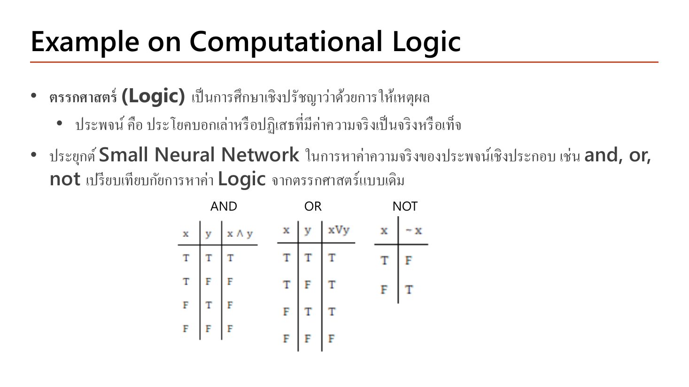
อาจารย์นิยามไว้เป็นภาษาไทยว่า ตรรกศาสตร์ (Logic) คือการศึกษาเชิงปรัชญาว่าด้วยการให้เหตุผล และ ประพจน์ คือประโยคบอกเล่าหรือปฏิเสธที่มีค่าความจริงเป็นจริงหรือเท็จ (ไม่มีก้ำกึ่ง). จากนั้นตั้งเป้าหมายของหัวข้อไว้ว่า "ประยุกต์ Small Neural Network ในการหาค่าความจริงของประพจน์เชิงประกอบ เช่น and, or, not เปรียบเทียบกับการหาค่า Logic จากตรรกศาสตร์แบบเดิม". ตารางค่าความจริงคลาสสิกทั้งสามที่เป็นเกณฑ์ตรวจคำตอบของเราคือ: \(x \wedge y\) เป็นจริงแถวเดียวคือ T–T; \(x \vee y\) เป็นเท็จแถวเดียวคือ F–F; และ \(\sim x\) กลับค่า T↔F. ในสามหน้าถัดไปเราจะแทน T ด้วยเลข 1 และ F ด้วยเลข 0 แล้วดูว่า node เดียวให้ผลตรงตารางนี้ได้ไหม.

โจทย์คือ "ทำนาย \(y = x_1 \text{ AND } x_2\)" โดยให้เวกเตอร์ input เป็น \(x = [x_0, x_1, x_2]^\top\) (มี \(x_0\) เป็น bias) และตั้งค่า \(\theta = [-30, 20, 20]^\top\) พร้อมใช้ \(g=\) sigmoid ⇒ ได้ \(h_\theta(x) = g(-30+20x_1+20x_2)\). อาจารย์ไล่แทนค่า 0/1 ให้ดูครบทั้งสี่แถวบนสไลด์ และคำตอบที่ได้คือ \(g(-30), g(-10), g(-10), g(10)\) ตามลำดับ ซึ่งปัดเป็น 0, 0, 0, 1.
ได้ \([0,0,0,1]\) = ตาราง AND พอดี. เหตุผลเชิงกลไก: bias \(-30\) ตั้ง "ด่าน" ไว้สูง ต้องมี input ช่วยกันดันถึง 40 ถึงจะข้ามได้ ⇒ ต้องเป็น 1 ทั้งคู่เท่านั้น.

หน้า OR ใช้โครงเดิมทุกอย่าง เปลี่ยนแค่ \(\theta = [-10, 20, 20]^\top\) ⇒ \(h_\theta(x) = g(-10+20x_1+20x_2)\) และอาจารย์เว้นคำตอบทั้งสี่แถวไว้ให้เติมเอง (ลูกศร -> หลังแต่ละบรรทัดว่างเปล่า). นี่คือเฉลยเต็ม:
ได้ \([0,1,1,1]\) = ตาราง OR พอดี. ต่างจาก AND แค่ bias เดียว (\(-30 \to -10\)) — bias ยิ่งเข้าใกล้ 0 ด่านยิ่งต่ำ นิวรอนยิ่ง "ยิงง่าย".

NOT มี input เดียว จึงใช้ \(x = [x_0, x_1]^\top\) และ \(\theta = [10, -20]^\top\) ⇒ \(h_\theta(x)=g(10-20x_1)\). จุดที่ต้องสังเกตคือ weight เป็นลบ ซึ่งทำให้ input ที่เป็น 1 ไป "ดึง" \(z\) ลงแทนที่จะดันขึ้น.
ได้ \([1,0]\) = ตรงข้ามกับ input พอดี = NOT. สังเกตว่า \(|\theta_0|=10\) กับ \(|\theta_1|=20\) ถูกเลือกให้ \(|z|=10\) ทั้งสองกรณี ⇒ sigmoid อิ่มตัวทั้งคู่ ให้คำตอบเด็ดขาด.
แพทเทิร์นร่วมของทั้งสาม gate: ทุกอันคือ neuron เดียวที่เลือก \(\theta\) ให้ "เส้นตัดสิน" \(z=0\) ตกในตำแหน่งที่ตรงกับตารางค่าความจริง แล้วให้ขนาดของ \(\theta\) ใหญ่พอให้ sigmoid อิ่มตัว. และสิ่งที่ Lesson 3 จะเปลี่ยนคือ เราจะเลิกตั้ง \(\theta\) ด้วยมือ แล้วให้ gradient descent เรียน \(\theta\) จากข้อมูลแทน.
ตั้งแต่หัวข้อนี้ไปจนถึงหัวข้อ 6 อาจารย์เปลี่ยนโหมดจาก "แนวคิดของโครงข่าย" มาเป็น "เครื่องมือคณิตศาสตร์ + โค้ด" ที่ต้องใช้เขียนสูตรพวกนั้นให้สั้นและรันได้เร็ว. เริ่มจากคำถามภาคปฏิบัติ: ถ้าต้องบวกเลข 5,000 คู่ เราควรเขียน for loop หรือมีวิธีที่ดีกว่า?
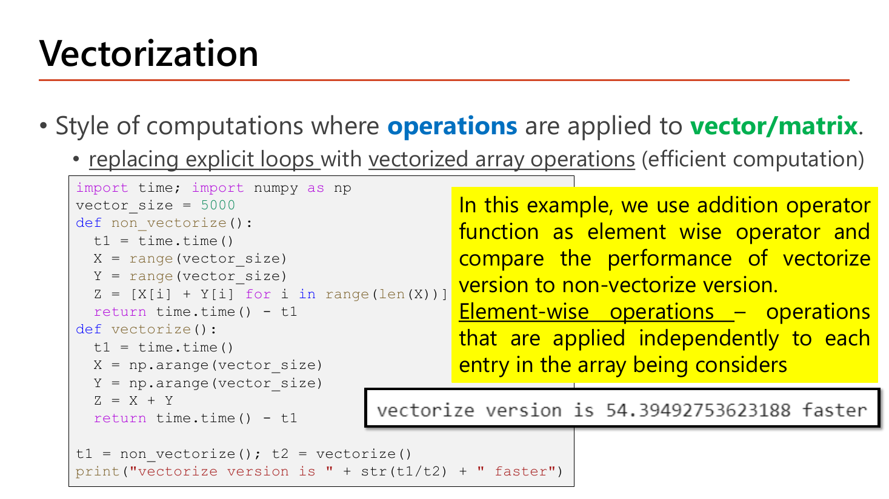
นิยามของอาจารย์: vectorization คือสไตล์การคำนวณที่ operations ถูกกระทำกับ vector/matrix ทั้งก้อน แทนที่จะวนทีละสมาชิก — บรรทัดรองขยายว่า "replacing explicit loops with vectorized array operations (efficient computation)". อีกคำที่อาจารย์เขียนไว้ในกรอบเหลืองคือ Element-wise operations = การดำเนินการที่ทำกับแต่ละช่องของ array อย่างอิสระ เช่นการบวกในตัวอย่างนี้: \([0,1,2,\dots]+[0,1,2,\dots]\) ให้ \([0,2,4,\dots]\) ช่องต่อช่อง ไม่ใช่การรวมเป็นค่าเดียว. ผลลัพธ์ที่อาจารย์รันโชว์บนสไลด์คือ "vectorize version is 54.39492753623188 faster" — เร็วกว่า 54 เท่าจากงานเดียวกันเป๊ะ.
import time; import numpy as np
vector_size = 5000
def non_vectorize():
t1 = time.time()
X = range(vector_size)
Y = range(vector_size)
Z = [X[i] + Y[i] for i in range(len(X))]
return time.time() - t1
def vectorize():
t1 = time.time()
X = np.arange(vector_size)
Y = np.arange(vector_size)
Z = X + Y
return time.time() - t1
t1 = non_vectorize(); t2 = vectorize()
print("vectorize version is " + str(t1/t2) + " faster")| โค้ด | ทำอะไร |
|---|---|
| import time; import numpy as np | เรียกใช้โมดูล time (สำหรับจับเวลา) และ numpy โดยตั้งชื่อย่อว่า np ตามธรรมเนียม; เครื่องหมาย ; ใช้เขียนสองคำสั่งในบรรทัดเดียว |
| vector_size = 5000 | ขนาดของข้อมูลที่จะทดสอบ = 5,000 ตัว ใช้ร่วมกันทั้งสองฟังก์ชันเพื่อให้เทียบกันได้อย่างยุติธรรม |
| def non_vectorize(): | นิยามฟังก์ชันเวอร์ชัน "ไม่ vectorize" ซึ่งจะคืนค่าเวลาที่ใช้ (หน่วยวินาที) |
| t1 = time.time() | บันทึกเวลาเริ่มต้น (เป็นจำนวนวินาทีนับจาก 1970) เพื่อเอาไปลบตอนจบ |
| X = range(vector_size) Y = range(vector_size) | สร้างลำดับเลข 0,1,2,…,4999 สองชุดแบบ Python ล้วน (ยังไม่ใช่ numpy array) |
| Z = [X[i] + Y[i] for i in range(len(X))] | list comprehension: วนทีละ index \(i\) แล้วบวกทีละคู่ — ได้ list ยาว 5,000 ช่อง; นี่คือ "explicit loop" ที่นิยามของ vectorization บอกให้เลิกใช้ |
| return time.time() - t1 | คืนเวลาที่ใช้ = เวลาปัจจุบัน − เวลาเริ่มต้น |
| def vectorize(): | ฟังก์ชันเวอร์ชัน vectorize ทำงานเดียวกันทุกประการ |
| X = np.arange(vector_size) | np.arange = เวอร์ชัน numpy ของ range ให้ผลเป็น ndarray รูปร่าง (5000,) ชนิด int — ต่างจาก range ตรงที่มันคือ array จริงในหน่วยความจำ |
| Z = X + Y | บวกทั้ง array ในคำสั่งเดียว (element-wise) ได้ array รูปร่าง (5000,) — ไม่มี loop ในระดับ Python เลย งานถูกส่งไปทำใน C |
| t1 = non_vectorize(); t2 = vectorize() | เรียกทั้งสองฟังก์ชัน เก็บเวลาไว้เทียบ; ระวังว่า t1 ตัวนี้เป็นระยะเวลา คนละตัวกับ t1 ที่อยู่ในฟังก์ชัน |
| print("vectorize version is " + str(t1/t2) + " faster") | หารเวลาสองแบบเพื่อดูว่าเร็วกว่ากี่เท่า; str(...) แปลงตัวเลขเป็นข้อความก่อนเชื่อมด้วย + (ถ้าไม่แปลงจะ TypeError) |
ผลลัพธ์ที่คาด: บรรทัดข้อความรูปแบบ vectorize version is <ตัวเลข> faster โดยบนสไลด์ได้ 54.39492753623188. เมื่อรันซ้ำบนเครื่องอื่นตัวเลขจะไม่เท่าเดิม (ทดสอบซ้ำ 5 ครั้งได้ราว 8–96 เท่า) เพราะขึ้นกับ CPU และภาระงานขณะนั้น — สิ่งที่ต้องจำคืออันดับความเร็ว ไม่ใช่ตัวเลขเป๊ะ ๆ.
X + Y) ต่างจาก np.dot ที่รวมเป็นค่าเดียว. กับดัก: สลับสองคำนี้กันในข้อสอบเติมโค้ด.np.arange(n) (ไม่ใช่ np.range ซึ่งไม่มีจริง), ผลของ X + Y เมื่อ X,Y เป็น ndarray (element-wise) เทียบกับเมื่อเป็น list ของ Python (ต่อ list เข้าด้วยกัน!), และ str() ที่ต้องครอบตัวเลขก่อนเชื่อมสตริง.ถ้าคุณไม่เคยเรียนพีชคณิตเชิงเส้นมาก่อน หัวข้อนี้กับ 5B คือส่วนที่ต้องอ่านช้า ๆ. อาจารย์ใช้สไลด์ถึง 18 หน้า (หน้า 20–37) ปูพื้นเรื่องนี้ก่อนเข้าสูตรของ NN เพราะทุกสูตรหลังจากนี้เขียนด้วยภาษาเวกเตอร์/เมทริกซ์ทั้งหมด.
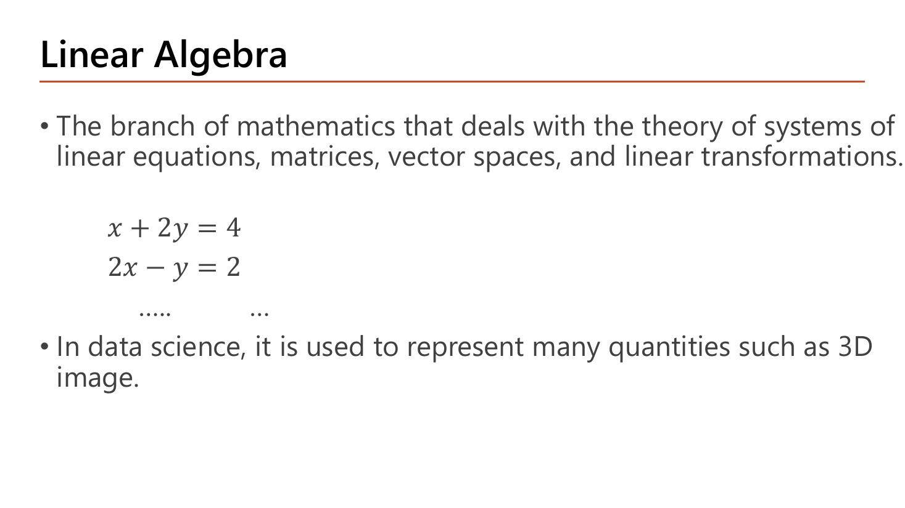
อาจารย์นิยามว่า linear algebra คือสาขาคณิตศาสตร์ที่ว่าด้วยทฤษฎีของระบบสมการเชิงเส้น, เมทริกซ์, ปริภูมิเวกเตอร์ และการแปลงเชิงเส้น แล้วยกระบบสมการสองบรรทัดเป็นตัวอย่าง: \(x+2y=4\) และ \(2x-y=2\). ลองแก้จริงให้เห็นว่าทำไมมันเกี่ยวกับเรา — จากสมการที่สอง \(y = 2x-2\) แทนลงสมการแรก: \(x+2(2x-2)=4 \Rightarrow 5x-4=4 \Rightarrow x=1.6\) แล้ว \(y = 2(1.6)-2 = 1.2\) (ตรวจ: \(1.6+2(1.2)=4\) ✓, \(2(1.6)-1.2=2\) ✓). สังเกตหน้าตาของสมการ: "สัมประสิทธิ์คูณตัวแปร บวกกัน เท่ากับค่าหนึ่ง" — เหมือน \(z=\theta_0+\theta_1x_1+\theta_2x_2\) ของเราทุกประการ ต่างกันแค่ในโลก ML เรารู้ \(x\) แต่ต้องหา \(\theta\). อาจารย์ปิดท้ายว่าในงาน data science เราใช้ของพวกนี้แทนปริมาณจริง เช่นภาพ 3 มิติ (ภาพสี = ตัวเลขเรียงเป็น 3 แกน: สูง × กว้าง × 3 สี ซึ่งก็คือ 2,352 ตัวเลขของภาพ 28×28 ในหน้า 3 นั่นเอง).
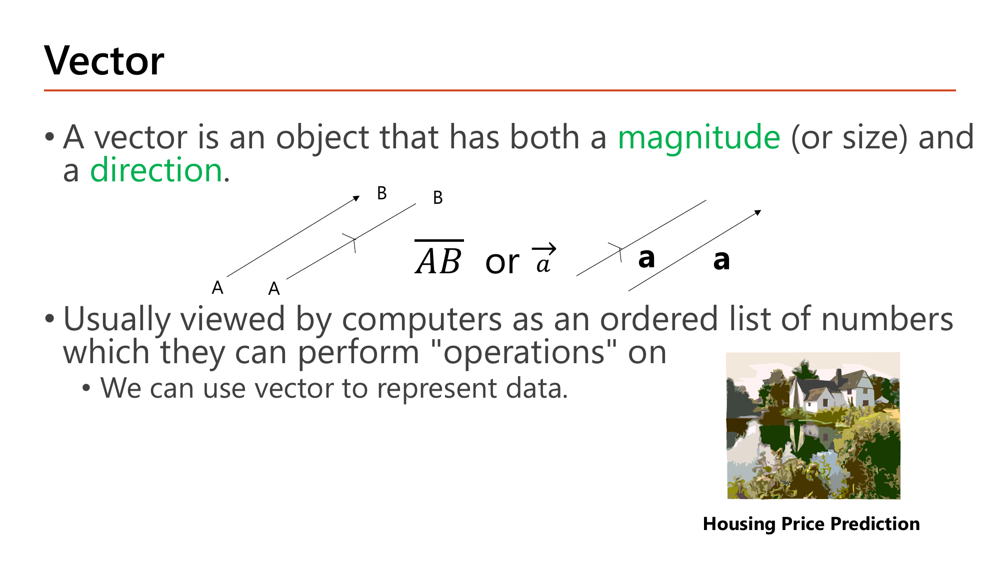
นิยามที่ทำสีไว้: เวกเตอร์คือสิ่งที่มีทั้ง magnitude (ขนาด) และ direction (ทิศทาง). ภาพลูกศรจาก A ไป B ที่เขียนแทนด้วย \(\overline{AB}\) หรือ \(\vec{a}\) สื่อว่า "ลูกศรที่ยาวเท่ากันและชี้ทางเดียวกันคือเวกเตอร์เดียวกัน ไม่ว่าจะวาดเริ่มจากจุดไหน" — นั่นคือเหตุผลที่สไลด์วาดลูกศร \(\mathbf{a}\) สองอันคู่ขนานกัน. อาจารย์เสริมมุมของคนทำคอมพิวเตอร์ว่า โดยทั่วไปคอมพิวเตอร์มองเวกเตอร์เป็น "ordered list of numbers" (รายการตัวเลขที่เรียงลำดับ — สลับตำแหน่งไม่ได้) ที่เราเอาไป "ทำ operations" ได้ และเราใช้เวกเตอร์แทนข้อมูลได้ เช่นบ้าน 1 หลังในงานทำนายราคาบ้านเขียนเป็น \([\,100,\ 3\,]\) หมายถึงขนาด 100 ตร.ว. 3 ห้องนอน — ลำดับสำคัญ ถ้าสลับเป็น \([3, 100]\) ความหมายเปลี่ยนทันที.
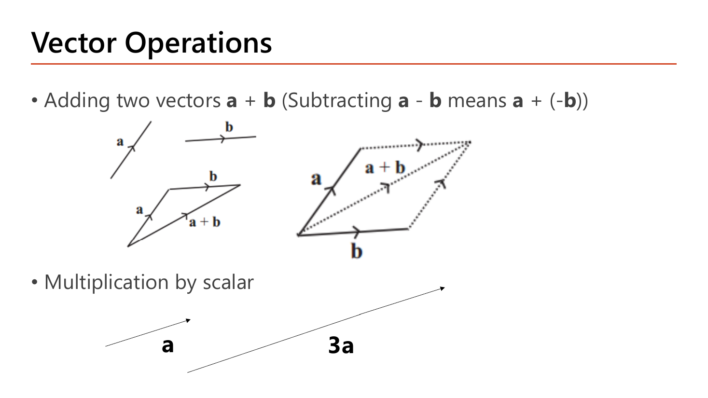
สองการกระทำพื้นฐานที่ต้องทำเป็น. (1) การบวก \(\mathbf{a}+\mathbf{b}\): ในเชิงเรขาคณิตคือต่อหางลูกศร \(\mathbf{b}\) เข้ากับหัวของ \(\mathbf{a}\) แล้วลากจากจุดเริ่มต้นไปยังปลายสุด (จึงได้รูปสี่เหลี่ยมด้านขนานตามที่สไลด์วาด) ส่วนในเชิงตัวเลขคือบวกทีละช่อง: \([1,2]+[2,1]=[1{+}2,\ 2{+}1]=[3,3]\). อาจารย์วงเล็บไว้ว่าการลบ \(\mathbf{a}-\mathbf{b}\) แปลว่า \(\mathbf{a}+(-\mathbf{b})\) คือกลับทิศลูกศร \(\mathbf{b}\) ก่อนแล้วค่อยบวก: \([1,2]-[2,1]=[-1,1]\). (2) การคูณด้วยสเกลาร์: สเกลาร์คือตัวเลขธรรมดาหนึ่งตัว (ไม่มีทิศทาง) การคูณจะยืด/หดความยาวแต่ไม่เปลี่ยนทิศ — ลูกศร \(3\mathbf{a}\) ในสไลด์จึงยาวเป็น 3 เท่าของ \(\mathbf{a}\) และชี้ทางเดิม ในเชิงตัวเลข \(3[1,2]=[3,6]\). (ถ้าคูณด้วยจำนวนลบ ทิศจะกลับหัว และถ้าคูณด้วยเลขระหว่าง 0 ถึง 1 จะหดสั้นลง)
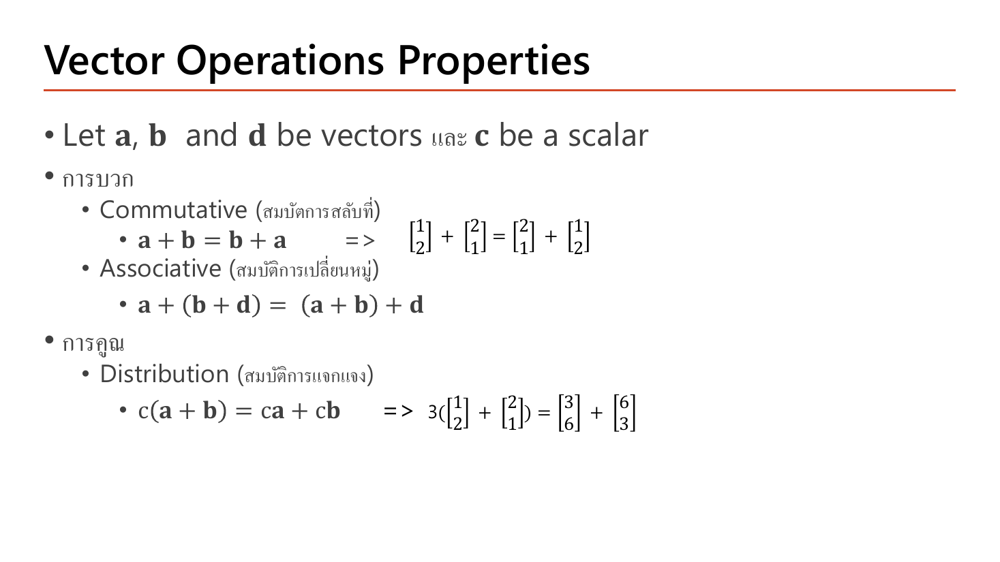
ให้ \(\mathbf{a}, \mathbf{b}, \mathbf{d}\) เป็นเวกเตอร์ และ \(c\) เป็นสเกลาร์ อาจารย์ยก 3 สมบัติพร้อมชื่อไทยกำกับ. Commutative (สมบัติการสลับที่): \(\mathbf{a}+\mathbf{b} = \mathbf{b}+\mathbf{a}\) ตัวอย่างบนสไลด์คือ \(\begin{bmatrix}1\\2\end{bmatrix}+\begin{bmatrix}2\\1\end{bmatrix} = \begin{bmatrix}2\\1\end{bmatrix}+\begin{bmatrix}1\\2\end{bmatrix}\) ซึ่งทั้งสองข้างได้ \(\begin{bmatrix}3\\3\end{bmatrix}\) เท่ากัน. Associative (สมบัติการเปลี่ยนหมู่): \(\mathbf{a}+(\mathbf{b}+\mathbf{d}) = (\mathbf{a}+\mathbf{b})+\mathbf{d}\) — จับคู่บวกก่อนหลังไม่สำคัญ. Distribution (สมบัติการแจกแจง): \(c(\mathbf{a}+\mathbf{b}) = c\mathbf{a}+c\mathbf{b}\) ตัวอย่างสไลด์: \(3\left(\begin{bmatrix}1\\2\end{bmatrix}+\begin{bmatrix}2\\1\end{bmatrix}\right) = \begin{bmatrix}3\\6\end{bmatrix}+\begin{bmatrix}6\\3\end{bmatrix}\). ตรวจสองข้าง: ซ้าย \(=3\begin{bmatrix}3\\3\end{bmatrix}=\begin{bmatrix}9\\9\end{bmatrix}\), ขวา \(=\begin{bmatrix}3+6\\6+3\end{bmatrix}=\begin{bmatrix}9\\9\end{bmatrix}\) — เท่ากันจริง. จำไว้ว่าทั้งสามข้อนี้เป็นของ "การบวกเวกเตอร์" และ "สเกลาร์คูณ" เท่านั้น อีกเดี๋ยวในหัวข้อ 5B เราจะเจอว่าการคูณเมทริกซ์ไม่มีสมบัติสลับที่ — จุดนี้ออกสอบแน่นอน.
รากที่สองและทฤษฎีพีทาโกรัส — เครื่องมือเดียวที่ใช้วัด "ขนาด" ของเวกเตอร์
รากที่สอง \(\sqrt{k}\) คือ "เลขที่ยกกำลังสองแล้วได้ \(k\)" เช่น \(\sqrt{25}=5\) เพราะ \(5^2=25\); \(\sqrt{9}=3\); ส่วน \(\sqrt{14}\) ไม่ลงตัวจึงตอบเป็นทศนิยมประมาณ 3.742 (ตรวจได้: \(3.742^2 = 14.00\)).
ทฤษฎีพีทาโกรัสบอกว่าในสามเหลี่ยมมุมฉาก ด้านตรงข้ามมุมฉากยกกำลังสอง = ผลรวมกำลังสองของอีกสองด้าน: \(c^2=a^2+b^2\). ตัวอย่างเป็นตัวเลข: เดินไปทางขวา 3 ก้าว แล้วเดินขึ้น 4 ก้าว ระยะตรงจากจุดเริ่มถึงจุดจบคือ \(\sqrt{3^2+4^2}=\sqrt{9+16}=\sqrt{25}=5\) ก้าว (ไม่ใช่ 7 ก้าวซึ่งเป็นระยะที่เดินจริง).
สิ่งที่ต้องยอมรับเพิ่มคือ สูตรนี้ใช้ได้กับกี่มิติก็ได้ แม้วาดรูปไม่ออก: ขนาดของ \([1,2,3]\) คือ \(\sqrt{1^2+2^2+3^2}=\sqrt{14}\) และของ \([3,4,12]\) คือ \(\sqrt{9+16+144}=\sqrt{169}=13\) พอดี.
![Geometric Interpretation of Vector slide: point u = (3,4) drawn on x-y axes from origin O, the length or norm of u computed by Pythagoras as the square root of 3 squared plus 4 squared equals 5, the unit direction vector w = (3/5, 4/5), and a boxed question asking for the size of the vector [1,2,3]](../assets/slides/dl2-p24-vector-length-geometric.png)
อาจารย์อธิบายว่าการเขียนเวกเตอร์แบบพื้นฐานที่สุดคือลูกศรที่มี coordinates on the axis เช่นจุดในระบบพิกัดคาร์ทีเซียน 2 มิติ: จุด \(u=(u_1,u_2) \in \mathbb{R}^2\) กำหนดเวกเตอร์ที่เริ่มจากจุดอ้างอิง O แล้วไปจบที่ \(u\) (เขียนได้ว่า \(\overline{OU}\)). จากนั้นนิยามสองคำที่ทำสีไว้: length (or norm) of vector u เขียนแทนด้วย \(\|u\|\) และวัดด้วย Euclidean magnitude ตามพีทาโกรัส; กับ unit vector คือเวกเตอร์ที่มีความยาวเท่ากับ 1 ซึ่งใช้บอกทิศทางล้วน ๆ. ตัวเลขจริงบนสไลด์คือ \(u=(3,4)\): \(\|u\| = \sqrt{3^2+4^2} = 5\) และทิศทางของมันคือ \(w=\left(\frac{3}{5},\frac{4}{5}\right) = (0.6, 0.8)\) ซึ่งตรวจได้ว่ายาว 1 จริง \(\big(\sqrt{0.36+0.64}=1\big)\) — วิธีหา unit vector คือ "เอาเวกเตอร์หารด้วยความยาวของตัวเอง" เสมอ.
ตอบ \(\sqrt{14}\approx 3.742\). อย่าเผลอตอบ 6 (ซึ่งคือ \(1+2+3\) การบวกเฉย ๆ) หรือ 3 (จำนวนช่อง) — สองค่านี้คือตัวลวงมาตรฐานในข้อสอบ.
และค่านี้มีความหมายกับเราจริง ๆ: \(\|\theta\|^2 = \sum_j \theta_j^2\) ก็คือเทอม regularization ใน Lesson 1 — การทำ regularization คือ "บีบขนาดของเวกเตอร์ \(\theta\) ให้เล็กลง" นั่นเอง.
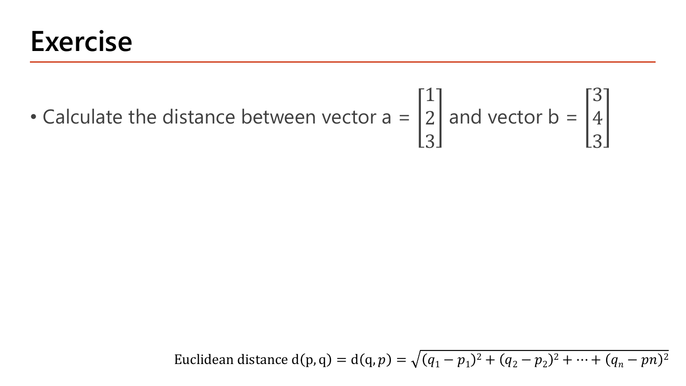
สไลด์นี้เป็นแบบฝึกหัดที่อาจารย์ไม่ได้เฉลยไว้: หาระยะห่างระหว่าง \(a=[1,2,3]\) กับ \(b=[3,4,3]\) โดยใช้สูตร Euclidean distance ที่ให้มา \(d(p,q)=d(q,p)=\sqrt{(q_1-p_1)^2+(q_2-p_2)^2+\dots+(q_n-p_n)^2}\). สังเกตว่าสูตรนี้คือ "ขนาดของเวกเตอร์ผลต่าง" นั่นเอง คือ \(d(a,b) = \|b-a\|\) และการที่ \(d(p,q)=d(q,p)\) ก็เพราะกำลังสองทำให้เครื่องหมายลบหายไป.
ตอบ \(\sqrt{8}\approx 2.828\). ข้อสังเกตที่ออกสอบได้: ช่องที่สาม (3 กับ 3) เท่ากันจึงไม่ส่งผลต่อระยะเลย — feature ที่มีค่าเท่ากันในสองตัวอย่างไม่ช่วยแยกพวกมัน ซึ่งเป็นหลักการเดียวกับที่ใช้ในอัลกอริทึมวัดความคล้าย เช่น k-NN.
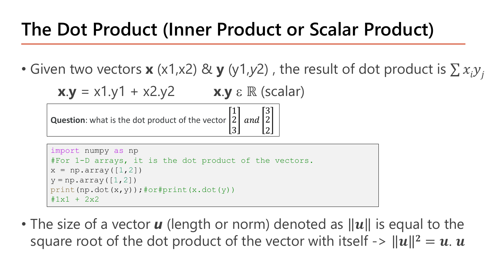
นิยาม: ให้เวกเตอร์ \(\mathbf{x}=(x_1,x_2)\) และ \(\mathbf{y}=(y_1,y_2)\) ผลของ dot product คือ \(\mathbf{x}\cdot\mathbf{y} = x_1y_1 + x_2y_2\) ซึ่งเขียนรวมเป็น \(\sum_i x_iy_i\) และผลลัพธ์เป็นสเกลาร์ (\(\mathbf{x}\cdot\mathbf{y} \in \mathbb{R}\)) ไม่ใช่เวกเตอร์ — นี่คือจุดต่างสำคัญจากการบวกเวกเตอร์หรือ element-wise multiply ที่ให้ผลเป็นเวกเตอร์. อาจารย์เพิ่มความสัมพันธ์สำคัญอีกข้อ: ขนาดของเวกเตอร์เท่ากับรากที่สองของ dot product ของมันกับตัวเอง ⇒ \(\|u\|^2 = u\cdot u\) (ลองกับ \(u=(3,4)\): \(u\cdot u = 9+16 = 25\) และ \(\|u\|=\sqrt{25}=5\) ✓ ตรงกับหน้า 24).
ตอบ 13 (เป็นสเกลาร์). และนี่คือเหตุผลที่ dot product สำคัญกับเรา: \(z=\theta_0x_0+\theta_1x_1+\theta_2x_2\) ของทุก node ก็คือ dot product ระหว่างเวกเตอร์ \(\theta\) กับเวกเตอร์ \(x\) พอดี.
import numpy as np
# For 1-D arrays, it is the dot product of the vectors.
x = np.array([1,2])
y = np.array([1,2])
print(np.dot(x,y));#or#print(x.dot(y))
#1x1 + 2x2| โค้ด | ทำอะไร |
|---|---|
| import numpy as np | โหลด numpy ซึ่งเป็นไลบรารีสำหรับ array ตัวเลข (ทุกโค้ดของบทนี้เริ่มด้วยบรรทัดนี้) |
| # For 1-D arrays, it is the dot product of the vectors. | คอมเมนต์จากเอกสาร numpy: ถ้า argument เป็น array 1 มิติ np.dot จะให้ dot product ของเวกเตอร์ (ถ้าเป็น 2 มิติจะกลายเป็นการคูณเมทริกซ์ ซึ่งจะเจอในหน้า 34) |
| x = np.array([1,2]) | สร้าง ndarray 1 มิติ รูปร่าง (2,) เก็บค่า 1 และ 2 — วงเล็บเหลี่ยมชั้นเดียวหมายถึง 1 มิติ |
| y = np.array([1,2]) | เวกเตอร์ตัวที่สอง ต้องมีจำนวนช่องเท่ากับ x ไม่งั้น np.dot จะ error เรื่องมิติไม่ตรงกัน |
| print(np.dot(x,y)) | คำนวณ \(1\times1 + 2\times2 = 5\) แล้วพิมพ์ออกมา ผลเป็นสเกลาร์ (numpy int) ไม่ใช่ array |
| #or#print(x.dot(y)) | รูปแบบเขียนอีกแบบที่ให้ผลเหมือนกัน: เรียก .dot() เป็นเมธอดของ array โดยตรง — ข้อสอบชอบถามว่าสองแบบนี้ต่างกันไหม (คำตอบ: ไม่ต่าง) |
| #1x1 + 2x2 | คอมเมนต์ที่อาจารย์เขียนกำกับวิธีคิดด้วยมือของบรรทัดบน |
ผลลัพธ์ที่คาด: 5 (มาจาก \(1\cdot1+2\cdot2 = 1+4 = 5\)) พิมพ์ออกมาบรรทัดเดียว และถ้าเปลี่ยนไปใช้ print(x.dot(y)) ก็ได้ 5 เท่ากัน.
np.dot(x,y) กับ x.dot(y) ให้ผลเท่ากัน ส่วน x*y คือ element-wise ได้ [1,4] ไม่ใช่ 5.เวกเตอร์เก็บข้อมูลได้ 1 ตัวอย่าง (บ้าน 1 หลัง) แต่ชุดข้อมูลจริงมีหลายตัวอย่าง และโครงข่ายมี weight หลายเส้น — เราจึงต้องการตารางตัวเลขสองมิติ นั่นคือ เมทริกซ์. สิบเอ็ดหน้าถัดไปของอาจารย์คือกฎการคำนวณของมันทั้งหมด และทุกกฎจะถูกใช้ซ้ำในหัวข้อ 6 กับ 8.
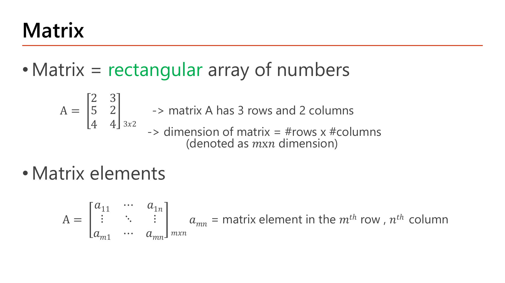
นิยามสั้น ๆ: เมทริกซ์คือ array ของตัวเลขที่เป็นรูป rectangular — คำนี้สำคัญเพราะหมายความว่าทุกแถวต้องมีจำนวนคอลัมน์เท่ากัน (ตารางที่แถวยาวไม่เท่ากันไม่ใช่เมทริกซ์). ตัวอย่างบนสไลด์คือ \(A=\begin{bmatrix}2&3\\5&2\\4&4\end{bmatrix}_{3\times 2}\) ซึ่งอาจารย์กำกับว่า "matrix A has 3 rows and 2 columns" และให้กฎเรียกมิติว่า dimension = #rows × #columns เขียนแทนด้วย \(m \times n\) — ต้องอ่านว่า "สามคูณสอง" เสมอ ไม่ใช่ "สองคูณสาม". ส่วนการเรียกสมาชิกใช้ \(a_{mn}\) = สมาชิกในแถวที่ \(m\) คอลัมน์ที่ \(n\) เช่นในเมทริกซ์นี้ \(a_{21}=5\) (แถว 2 คอลัมน์ 1) และ \(a_{12}=3\) (แถว 1 คอลัมน์ 2) — สองค่านี้ไม่เท่ากัน ตอกย้ำว่าลำดับ "แถวก่อน คอลัมน์หลัง" ห้ามสลับ.

สไลด์นี้เว้นช่องคำตอบไว้ทั้งหมดให้เราเติม จากเมทริกซ์ \(A=\begin{bmatrix}3&4&38\\8&46&54\end{bmatrix}\) — เฉลยทีละข้อ:
มี 2 แถว (3 4 38 / 8 46 54) และแต่ละแถวมี 3 ตัว
$$m = 2,\qquad n = 3 \quad(\text{เขียนว่าเมทริกซ์ } 2\times3)$$แถวที่ 2 คือ (8, 46, 54) ตัวที่ 3 ของแถวนี้คือ 54
$$a_{23} = 54$$38 อยู่ในแถวที่ 1 และเป็นตัวที่ 3 ของแถวนั้น
$$i = 1,\qquad j = 3 \quad\Rightarrow\quad 38 = a_{13}$$ตอบ \(m=2,\ n=3,\ a_{23}=54,\ 38=a_{13}\). กับดักคลาสสิกคือสลับเป็น \(a_{31}\) (ซึ่งไม่มีอยู่จริง เพราะเมทริกซ์นี้มีแค่ 2 แถว) — วิธีกันพลาดคือถามตัวเองทุกครั้งว่า "ตัวแรกคือแถวใช่ไหม" ก่อนเขียนคำตอบ.
กฎ "แถวก่อน คอลัมน์หลัง" นี้ตรงกับ \(\theta_{ij}\) ของหัวข้อ 3 พอดี: \(i\) (ปลายทาง) = แถว, \(j\) (ต้นทาง) = คอลัมน์.
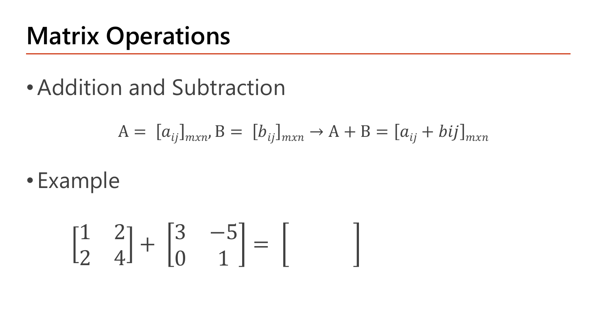
กฎการบวก/ลบเขียนเป็นทางการว่า ถ้า \(A=[a_{ij}]_{m\times n}\) และ \(B=[b_{ij}]_{m\times n}\) แล้ว \(A+B = [a_{ij}+b_{ij}]_{m\times n}\) — อ่านเป็นภาษาคน: "บวกช่องที่ตรงกัน ได้ผลลัพธ์ขนาดเท่าเดิม" และเงื่อนไขที่ซ่อนอยู่ในสัญลักษณ์คือ ทั้งสองเมทริกซ์ต้องมีขนาด \(m\times n\) เท่ากันเป๊ะ ไม่งั้นบวกไม่ได้เลย (ต่างจากการคูณที่ขอแค่มิติ "ใน" ตรงกัน). ตัวอย่างที่สไลด์ทิ้งช่องว่างไว้ เฉลยคือ:
$$\begin{bmatrix}1&2\\2&4\end{bmatrix}+\begin{bmatrix}3&-5\\0&1\end{bmatrix}=\begin{bmatrix}1+3&2+(-5)\\2+0&4+1\end{bmatrix}=\begin{bmatrix}4&-3\\2&5\end{bmatrix}$$อ่านเป็นภาษาคน: บวกเมทริกซ์ = บวกทีละช่อง ขนาดต้องเท่ากัน ผลลัพธ์ขนาดเดิม (เป็น element-wise operation แบบเดียวกับ X + Y ของ numpy ในหน้า 19)
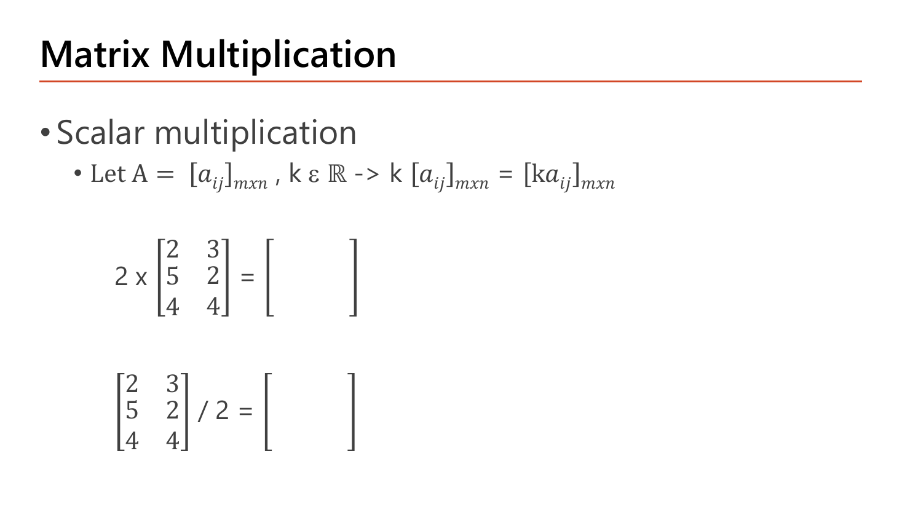
กฎคือ ถ้า \(A=[a_{ij}]_{m\times n}\) และ \(k\in\mathbb{R}\) แล้ว \(kA = [k\,a_{ij}]_{m\times n}\) — คูณทุกช่องด้วยตัวเลขเดียวกัน ขนาดไม่เปลี่ยน (แนวคิดเดียวกับการคูณสเกลาร์ของเวกเตอร์ในหน้า 22 เป๊ะ). สไลด์ให้สองโจทย์เว้นคำตอบไว้ เฉลยคือ:
$$2\begin{bmatrix}2&3\\5&2\\4&4\end{bmatrix}=\begin{bmatrix}4&6\\10&4\\8&8\end{bmatrix},\qquad \begin{bmatrix}2&3\\5&2\\4&4\end{bmatrix}\Big/\,2=\begin{bmatrix}1&1.5\\2.5&1\\2&2\end{bmatrix}$$สังเกตว่าการหารด้วย 2 ก็คือการคูณด้วย \(k=\tfrac12\) และช่องที่เป็นเลขคี่ (3, 5) กลายเป็นทศนิยม 1.5 และ 2.5 — เมทริกซ์ไม่จำเป็นต้องเก็บจำนวนเต็ม. ในงานจริงเราใช้การคูณสเกลาร์ตลอดเวลา เช่น \(\frac{\alpha}{m}\) ที่คูณ gradient ทั้งก้อนในสูตร gradient descent ของหัวข้อ 6.
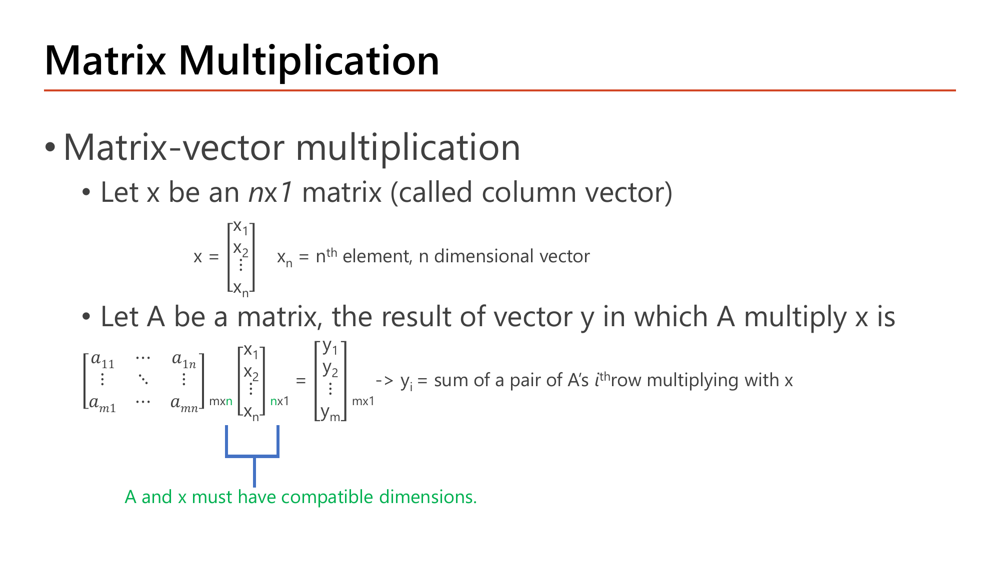
ก่อนอื่นนิยามศัพท์: column vector คือเมทริกซ์ที่มีคอลัมน์เดียว ขนาด \(n\times 1\) (ตัวเลขเรียงลงมาในแนวตั้ง) และสมาชิกตัวที่ \(n\) เขียนว่า \(x_n\). กฎการคูณคือ เอาเมทริกซ์ \(A\) ขนาด \(m\times n\) คูณเวกเตอร์ \(x\) ขนาด \(n\times1\) ได้ผลลัพธ์ \(y\) ขนาด \(m\times1\) โดยที่ \(y_i\) = ผลรวมของผลคูณทีละคู่ระหว่างแถวที่ \(i\) ของ \(A\) กับ \(x\) — พูดอีกแบบคือ \(y_i\) = dot product ของแถวที่ \(i\) กับเวกเตอร์ \(x\) (นี่คือเหตุผลที่ต้องเรียน dot product ก่อน). ข้อความสีเขียวที่อาจารย์เน้นใต้ภาพคือ A and x must have compatible dimensions. ซึ่งหมายความว่า จำนวนคอลัมน์ของ \(A\) ต้องเท่ากับจำนวนแถวของ \(x\) (ตัว \(n\) ที่อาจารย์ทำสีไว้ทั้งสองที่คือตัวเดียวกัน) ไม่งั้นคูณไม่ได้.
สูตรมิติที่ต้องท่องได้: \((m\times \mathbf{n})\cdot(\mathbf{n}\times 1) = (m\times 1)\) — ตัวเลขที่ติดกันตรงกลางต้องเท่ากันและมันจะ "หายไป" เหลือแค่ขอบนอก
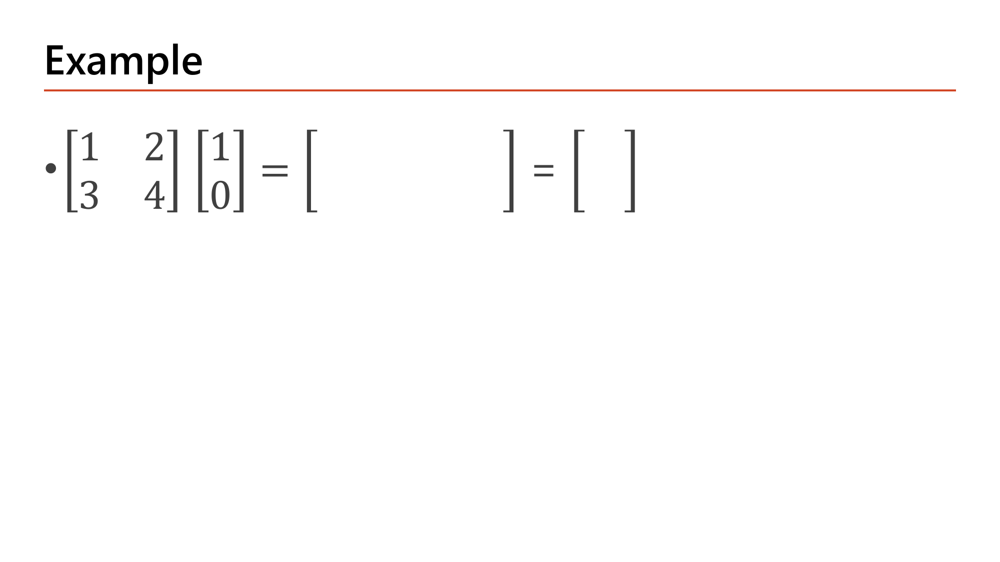
คอลัมน์ของ \(A\) = 2 เท่ากับแถวของ \(x\) = 2 ⇒ คูณได้ และผลลัพธ์จะมีขนาด \(2\times1\)
ได้ \(\begin{bmatrix}1\\3\end{bmatrix}\) ซึ่งก็คือคอลัมน์แรกของ \(A\) พอดี — เพราะเวกเตอร์ \([1,0]^\top\) ทำหน้าที่ "เลือกคอลัมน์ที่ 1" ออกมา. ความเข้าใจนี้จะอธิบายเรื่อง identity matrix ในหน้า 37 ได้ทันที.
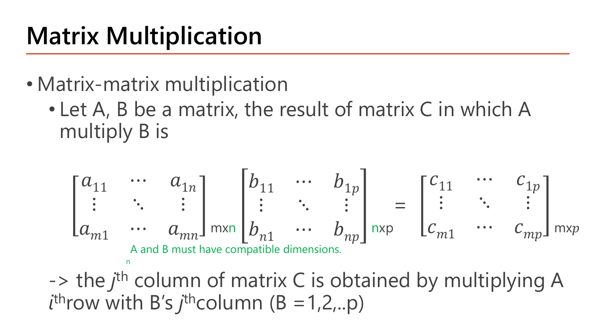
ขยายจากหน้าก่อน: ให้ \(A\) ขนาด \(m\times n\) และ \(B\) ขนาด \(n\times p\) ผลคูณ \(C=AB\) จะมีขนาด \(m\times p\) โดยอาจารย์อธิบายวิธีคิดว่า "คอลัมน์ที่ \(j\) ของ \(C\) ได้จากการเอาแถวของ \(A\) คูณกับคอลัมน์ที่ \(j\) ของ \(B\)" (ทำทีละคอลัมน์ \(j=1,2,\dots,p\)) — เท่ากับทำ matrix-vector ของหน้า 31 ซ้ำ \(p\) รอบนั่นเอง. เงื่อนไขที่ทำสีไว้อีกครั้งคือ n A and B must have compatible dimensions. โดยตัว n ที่เขียนนำหน้าคือฉลากชี้ไปที่มิติที่ต้องตรงกัน: จำนวนคอลัมน์ของ \(A\) ต้องเท่ากับจำนวนแถวของ \(B\). ตัวอย่างการเช็กเร็ว: \((3\times2)(2\times2)\) ⇒ ได้ \(3\times2\) (คูณได้เพราะ 2 ตรงกับ 2) แต่ \((2\times3)(2\times2)\) ⇒ คูณไม่ได้ เพราะ 3 ไม่เท่ากับ 2.
![Example slide: exercises multiplying the 3x2 matrix [[1,2],[2,0],[4,4]] by the column vectors [1,0] and [0,1] and then by the 2x2 identity matrix, beside numpy code creating 2x2, 2x1 and 1-D arrays and printing np.dot results with their shapes, and a boxed output list showing [[19 22] [43 50]], (2,2), [[5] [11]], (2,1), [5 11], (2,)](../assets/slides/dl2-p34-matrix-matrix-mult-example.png)
เช็กมิติ: \((3\times2)(2\times1)=3\times1\) สำหรับสองข้อแรก และ \((3\times2)(2\times2)=3\times2\) สำหรับข้อสุดท้าย. ผลข้อสุดท้ายคือ \(A\) เองเป๊ะ ๆ เพราะเมทริกซ์ \(\begin{bmatrix}1&0\\0&1\end{bmatrix}\) คือ identity matrix ที่แต่ละคอลัมน์ "ดึงคอลัมน์เดิมของ \(A\) ออกมา" ตามที่เห็นในขั้นที่ 1–2.
import numpy as np
x = np.array([[1,2],[3,4]])
print(x.shape)#2x2
y = np.array([[5,6],[7,8]])
print(y.shape)#2x2
z = np.array([[1],[2]])
print(z.shape)#2x1
w = np.array([1,2])
print(w.shape)#(2,)
print(np.dot(x,y));#or#print(x.dot(y))
#[[1*5+2*7, 1*6+2*8],[3*5+4*7, 3*6+4*8]]
print(np.dot(x,y).shape)
print(np.dot(x,z));#or#print(x.dot(z))
#[[1*1+2*2],[3*1+4*2]]
print(np.dot(x,z).shape)
print(np.dot(x,w));#or#print(x.dot(w))
#[1*1+2*2, 3*1+4*2]
print(np.dot(x,w).shape)| โค้ด | ทำอะไร |
|---|---|
| x = np.array([[1,2],[3,4]]) | สร้างเมทริกซ์ \(2\times2\) — วงเล็บเหลี่ยมสองชั้นแปลว่า 2 มิติ โดยแต่ละ list ชั้นในคือ 1 แถว |
| print(x.shape) | .shape คืนรูปร่างเป็น tuple: ได้ (2, 2) อ่านว่า 2 แถว 2 คอลัมน์ (อาจารย์คอมเมนต์กำกับว่า 2x2) |
| z = np.array([[1],[2]]) | column vector ขนาด \(2\times1\) — สังเกตว่าแต่ละแถวมีสมาชิกเดียว จึงเป็นเมทริกซ์ 2 มิติที่ผอมเป็นแนวตั้ง |
| w = np.array([1,2]) | array 1 มิติ ซึ่ง .shape ให้ (2,) — ไม่เหมือน z เลย: มันไม่ใช่ทั้งแถวและคอลัมน์ นี่คือจุดที่สไลด์หน้า 38 เตือนว่า Python ไม่ได้กำหนดว่าเวกเตอร์ปริยายเป็นแถวหรือคอลัมน์ |
| np.dot(x,y) | คูณเมทริกซ์ \((2\times2)(2\times2)\) ⇒ ได้ \(2\times2\): ช่อง (1,1) คือ \(1(5)+2(7)=19\), (1,2) คือ \(1(6)+2(8)=22\), (2,1) คือ \(3(5)+4(7)=43\), (2,2) คือ \(3(6)+4(8)=50\) |
| np.dot(x,z) | คูณ \((2\times2)(2\times1)\) ⇒ ได้ \(2\times1\): \([1(1)+2(2)] = 5\) และ \([3(1)+4(2)] = 11\) คืนค่าเป็นเมทริกซ์คอลัมน์ [[5],[11]] |
| np.dot(x,w) | คูณเมทริกซ์กับ array 1 มิติ ⇒ numpy ถือว่า w เป็นเวกเตอร์ธรรมดา ผลลัพธ์จึงเป็น 1 มิติ [5 11] shape (2,) ไม่ใช่ (2,1) |
| #or#print(x.dot(y)) | เขียนแบบเมธอดก็ได้ผลเท่ากัน (อาจารย์กำกับไว้ทุกบรรทัด) — สองสไตล์นี้ใช้แทนกันได้เสมอสำหรับ ndarray |
ผลลัพธ์ที่คาด (ตรงกับกรอบผลลัพธ์ที่อาจารย์แปะไว้ข้างโค้ด): (2, 2) / (2, 2) / (2, 1) / (2,) จากสี่บรรทัดแรก, แล้ว [[19 22] [43 50]] ตามด้วย (2, 2), [[ 5] [11]] ตามด้วย (2, 1), และ [ 5 11] ตามด้วย (2,). ข้อสังเกตที่ออกสอบได้: ตัวเลขใน \(x\cdot z\) กับ \(x\cdot w\) เหมือนกัน (5 และ 11) แต่รูปร่างต่างกัน — ขึ้นกับว่า argument ตัวที่สองเป็น 2 มิติหรือ 1 มิติ.
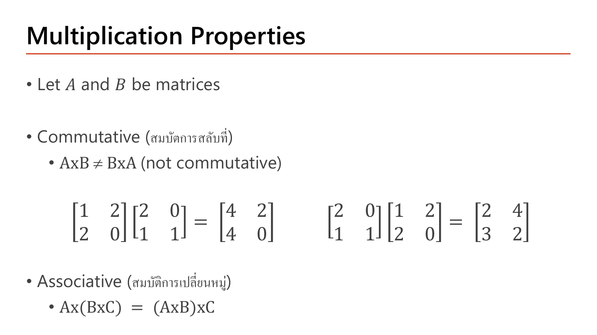
นี่คือหน้าที่นักเรียนพลาดบ่อยที่สุด เพราะกฎต่างจากเลขคณิตที่คุ้นเคย. Commutative (สมบัติการสลับที่) ใช้ไม่ได้: \(A\times B \ne B\times A\) โดยทั่วไป และอาจารย์พิสูจน์ด้วยตัวเลขจริงสองชุด — สลับลำดับแล้วได้คนละคำตอบเลย:
$$\begin{bmatrix}1&2\\2&0\end{bmatrix}\begin{bmatrix}2&0\\1&1\end{bmatrix}=\begin{bmatrix}4&2\\4&0\end{bmatrix},\qquad \begin{bmatrix}2&0\\1&1\end{bmatrix}\begin{bmatrix}1&2\\2&0\end{bmatrix}=\begin{bmatrix}2&4\\3&2\end{bmatrix}$$ลองตรวจช่องซ้ายบนของทั้งสองฝั่งให้เห็นว่าทำไมถึงต่าง: ฝั่งแรกคือแถว \((1,2)\) dot คอลัมน์ \((2,1)\) = \(1(2)+2(1)=4\); ฝั่งหลังคือแถว \((2,0)\) dot คอลัมน์ \((1,2)\) = \(2(1)+0(2)=2\) — คนละคู่ตัวเลขกันตั้งแต่ต้น. ส่วน Associative (สมบัติการเปลี่ยนหมู่) ใช้ได้: \(A\times(B\times C) = (A\times B)\times C\) แปลว่าจับคู่คูณก่อนหลังได้ตามสะดวก ขอแค่อย่าสลับลำดับซ้ายขวา. สมบัติข้อนี้มีประโยชน์จริงในการลดงานคำนวณ และเป็นเหตุผลที่เราเขียน \(\theta^{[2]}g(\theta^{[1]}x)\) ต่อกันเป็นทอด ๆ ได้ใน forward computation.
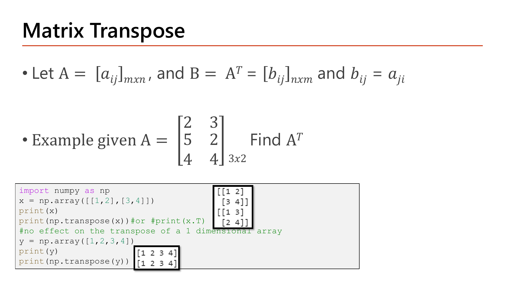
นิยาม: ถ้า \(A = [a_{ij}]_{m\times n}\) แล้ว \(B = A^{T} = [b_{ij}]_{n\times m}\) โดยที่ \(b_{ij} = a_{ji}\) — สังเกตดัชนีที่สลับกัน: ช่องแถว \(i\) คอลัมน์ \(j\) ของตัวใหม่ ดึงค่ามาจากช่องแถว \(j\) คอลัมน์ \(i\) ของตัวเดิม และขนาดพลิกจาก \(m\times n\) เป็น \(n\times m\). โจทย์บนสไลด์ให้หา \(A^T\) ของ \(A=\begin{bmatrix}2&3\\5&2\\4&4\end{bmatrix}_{3\times2}\) เฉลยคือ
$$A^{T}=\begin{bmatrix}2&5&4\\3&2&4\end{bmatrix}_{2\times3}$$ตรวจทีละช่อง: \(a_{21}=5\) (แถว 2 คอลัมน์ 1 ของเดิม) จึงต้องไปอยู่ที่ \(b_{12}\) (แถว 1 คอลัมน์ 2 ของใหม่) ✓. วิธีจำง่ายคือ "แถวเดิมกลายเป็นคอลัมน์ใหม่". การ transpose จำเป็นมากเวลาต้องทำให้มิติเข้ากันได้ก่อนคูณ เช่น \(\theta^\top X\) กับ \(X^\top\theta\) ในหน้า 38.
import numpy as np
x = np.array([[1,2],[3,4]])
print(x)
print(np.transpose(x))#or #print(x.T)
#no effect on the transpose of a 1 dimensional array
y = np.array([1,2,3,4])
print(y)
print(np.transpose(y))| โค้ด | ทำอะไร |
|---|---|
| x = np.array([[1,2],[3,4]]) | เมทริกซ์ \(2\times2\) ที่มีแถวแรก 1 2 และแถวสอง 3 4 |
| print(x) | พิมพ์ของเดิมออกมาก่อนเพื่อเทียบ: [[1 2] [3 4]] |
| print(np.transpose(x)) | สลับแถวกับคอลัมน์: ช่อง (1,2) ที่เดิมเป็น 2 ถูกแทนด้วย \(a_{21}=3\) ⇒ ได้ [[1 3] [2 4]] |
| #or #print(x.T) | x.T คือทางลัดของ np.transpose(x) ให้ผลเหมือนกันทุกประการ (เขียนสั้นกว่า นิยมใช้ในสูตร) |
| # no effect on the transpose of a 1 dimensional array | คำเตือนสำคัญ: array 1 มิติ transpose แล้วไม่เปลี่ยนอะไรเลย เพราะ shape (4,) ไม่มีแกนที่สองให้สลับ |
| y = np.array([1,2,3,4]) print(np.transpose(y)) | ทั้งสองบรรทัดพิมพ์ [1 2 3 4] เหมือนกันเป๊ะ — ถ้าอยากได้ column vector จริง ๆ ต้องเขียน y.reshape(-1,1) หรือประกาศเป็น 2 มิติตั้งแต่ต้น |
ผลลัพธ์ที่คาด (ตรงกับกรอบที่อาจารย์แปะบนสไลด์): [[1 2] [3 4]], แล้ว [[1 3] [2 4]], แล้ว [1 2 3 4] และ [1 2 3 4] อีกครั้ง — สองบรรทัดสุดท้ายเหมือนกันคือหลักฐานของคำเตือนเรื่อง 1 มิติ.
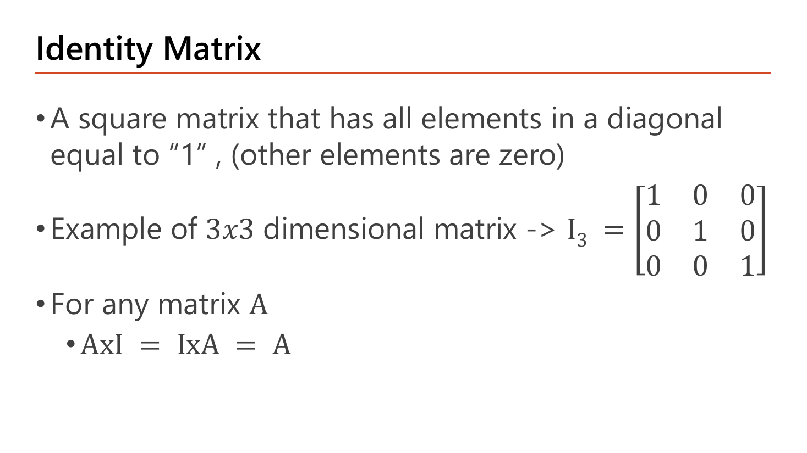
นิยาม: identity matrix คือเมทริกซ์จัตุรัส (แถว = คอลัมน์) ที่สมาชิกบนเส้นทแยงมุมเท่ากับ "1" ทั้งหมด ส่วนช่องอื่นเป็น 0 ตัวอย่างขนาด \(3\times3\) บนสไลด์คือ \(I_3=\begin{bmatrix}1&0&0\\0&1&0\\0&0&1\end{bmatrix}\). สมบัติที่อาจารย์เน้นคือ สำหรับเมทริกซ์ \(A\) ใด ๆ จะได้ \(A\times I = I\times A = A\) — มันคือ "เลข 1 ของโลกเมทริกซ์" คูณแล้วไม่เปลี่ยนอะไร. เหตุผลเห็นได้จากหน้า 32/34 ที่เราเพิ่งทำ: คอลัมน์ที่ \(j\) ของ \(I\) คือเวกเตอร์ที่มี 1 อยู่ตำแหน่งที่ \(j\) เท่านั้น เวลาคูณมันจึงไป "ดึงคอลัมน์ที่ \(j\) ของ \(A\)" ออกมาวางที่เดิมพอดี ทำครบทุกคอลัมน์ก็ได้ \(A\) กลับมาเหมือนเดิม. ข้อสังเกตที่ออกสอบได้: \(A\times I = I\times A\) เป็นข้อยกเว้นของกฎ "คูณเมทริกซ์สลับที่ไม่ได้" ในหน้า 35 — แต่ขนาดของ \(I\) ทั้งสองข้างอาจต่างกัน เช่น \(A\) ขนาด \(3\times2\) ต้องใช้ \(I_2\) คูณข้างขวา และ \(I_3\) คูณข้างซ้าย จึงจะมิติเข้ากันได้.
np.transpose(y) ของ array 1 มิติ ไม่เปลี่ยนอะไร, x.T = np.transpose(x), และ np.dot(x,w).shape เป็น (2,) ขณะที่ np.dot(x,z).shape เป็น (2,1).ตอนนี้เรามีเครื่องมือครบแล้ว (เวกเตอร์ เมทริกซ์ dot product กฎมิติ) อาจารย์จึงเอามาประกอบร่างกับสิ่งที่เรารู้อยู่แล้วจาก Lesson 1 คือ linear regression เพื่อแสดงให้เห็นว่า "สมการยาว ๆ ที่มี \(\Sigma\)" เขียนใหม่เป็นการคูณเมทริกซ์ครั้งเดียวได้อย่างไร — และนี่คือรูปแบบที่ Lesson 3 จะใช้เขียน forward/backward ของทั้งโครงข่าย.
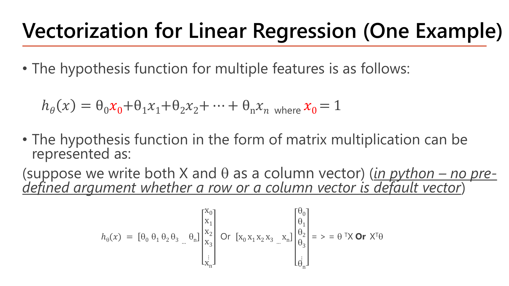
เริ่มจาก hypothesis สำหรับหลาย feature ที่คุ้นเคย: \(h_\theta(x) = \theta_0 x_0 + \theta_1x_1+\theta_2x_2+\dots+\theta_nx_n\) โดยอาจารย์ทำสีแดงที่ \(x_0\) พร้อมกำกับว่า \(x_0 = 1\) — เทคนิคนี้สำคัญมาก: การแอบใส่ feature ปลอมที่มีค่า 1 เข้าไปทำให้เทอม bias \(\theta_0\) กลายเป็น "เทอมคูณปกติ" เทอมหนึ่ง เราจึงเขียนทุกอย่างเป็น dot product เดียวได้โดยไม่ต้องบวก \(\theta_0\) แยก. จากนั้นอาจารย์เขียนสองแบบที่ให้ผลเท่ากัน: ถ้าให้ \(\theta\) เป็นแถวแล้ว \(x\) เป็นคอลัมน์ ก็คือ \(\theta^{\top}X\); ถ้าให้ \(x\) เป็นแถวแล้ว \(\theta\) เป็นคอลัมน์ ก็คือ \(X^{\top}\theta\) — ทั้งคู่ให้สเกลาร์ตัวเดียวกัน. อาจารย์ยังเตือนในวงเล็บว่า "in python – no pre-defined argument whether a row or a column vector is default vector" คือ Python ไม่ได้กำหนดว่าเวกเตอร์ 1 มิติเป็นแถวหรือคอลัมน์ (ตรงกับที่เราเห็นในโค้ดหน้า 34: w.shape เป็น (2,) ไม่ใช่ (2,1) หรือ (1,2)) ดังนั้นเวลาเขียนโค้ดจริงต้องดู shape ทุกครั้ง ไม่ใช่เดาจากสูตรบนกระดาษ.
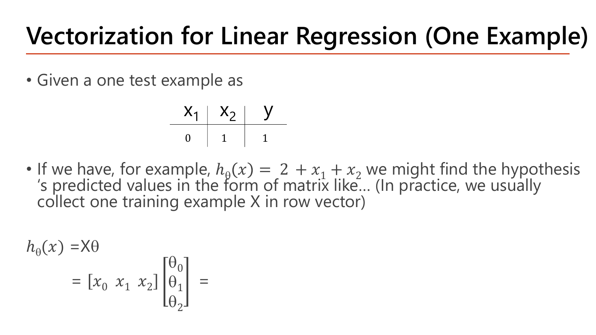
ตัวอย่างนี้มีข้อมูลทดสอบแถวเดียว: \(x_1=0,\ x_2=1\) และค่าจริง \(y=1\) พร้อมสมมติฐาน \(h_\theta(x) = 2+x_1+x_2\) ซึ่งอ่านค่า \(\theta\) ได้ทันทีว่า \(\theta_0=2,\ \theta_1=1,\ \theta_2=1\). อาจารย์วงเล็บไว้ว่าในทางปฏิบัติเรามักเก็บ 1 training example เป็น row vector จึงเขียนเป็น \(h_\theta(x) = X\theta\) โดย \(X = [x_0\ x_1\ x_2] = [1\ 0\ 1]\) (อย่าลืมเติม \(x_0=1\) เป็นช่องแรก) คูณกับ \(\theta\) ที่เป็นคอลัมน์ \([2,1,1]^\top\) ⇒ เช็กมิติ \((1\times3)(3\times1) = 1\times1\) ได้สเกลาร์ตัวเดียว:
$$h_\theta(x) = \begin{bmatrix}1&0&1\end{bmatrix}\begin{bmatrix}2\\1\\1\end{bmatrix} = 1(2)+0(1)+1(1) = 3$$ผลทำนายคือ 3 ขณะที่ค่าจริง \(y=1\) ⇒ คลาดเคลื่อน \(h-y = 2\) ซึ่งจะกลายเป็นวัตถุดิบของ cost function ในหน้า 42. จุดที่ต้องระวังคือคอลัมน์แรกของ \(X\) ต้องเป็น 1 เสมอ ถ้าลืมใส่ ผลจะเหลือ \(0(1)+1(1)=1\) ซึ่งผิด เพราะ bias \(\theta_0=2\) หายไปทั้งก้อน.
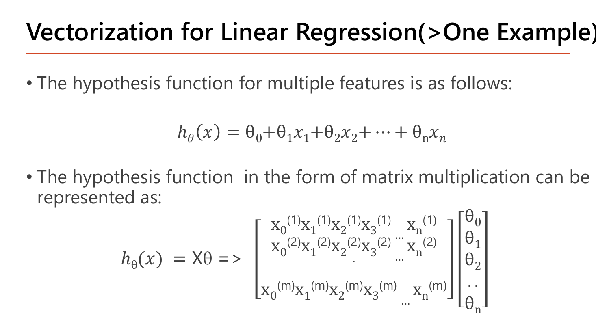
พอมีหลายตัวอย่าง อาจารย์ขยาย \(X\) จาก 1 แถวเป็น \(m\) แถว โดยใช้สัญกรณ์ superscript ในวงเล็บกลมแทนหมายเลขตัวอย่าง: แถวที่ 1 คือ \([x_0^{(1)}\ x_1^{(1)}\ \dots\ x_n^{(1)}]\) ไปจนถึงแถวที่ \(m\) คือ \([x_0^{(m)}\ \dots\ x_n^{(m)}]\) — 1 แถว = 1 training example, 1 คอลัมน์ = 1 feature (คอลัมน์แรกเป็น \(x_0=1\) ทั้งแถว). คูณด้วย \(\theta\) ที่เป็นคอลัมน์ \((n+1)\times1\) ⇒ \(h_\theta(x) = X\theta\) มีขนาด \((m\times(n{+}1))\cdot((n{+}1)\times1) = m\times1\) คือคำทำนายของทุกตัวอย่างเรียงเป็นคอลัมน์เดียว ได้มาในการคูณครั้งเดียว. อย่าสับสนสองสัญกรณ์: \(x^{(i)}\) (วงเล็บกลม) = ตัวอย่างที่ \(i\), \(x_j\) (ห้อย) = feature ที่ \(j\), และ \(a^{[l]}\) (วงเล็บเหลี่ยม) = layer ที่ \(l\) — ข้อสอบชอบสลับสามอันนี้.

\((3\times3)(3\times1) = 3\times1\) ⇒ ได้คำทำนาย 3 ค่า หนึ่งค่าต่อหนึ่งตัวอย่าง ✓
ได้ \([4,7,10]^\top\) เท่ากันทั้งสองวิธี แต่แบบเมทริกซ์ทำเสร็จในคำสั่งเดียว. สังเกตว่า \(x_1=0\) ทุกแถว ⇒ \(\theta_1=2\) ไม่มีผลต่อคำทำนายเลยในชุดข้อมูลนี้ — feature ที่ค่าคงที่เหมือนกันหมดไม่ให้ข้อมูลอะไรกับโมเดล.
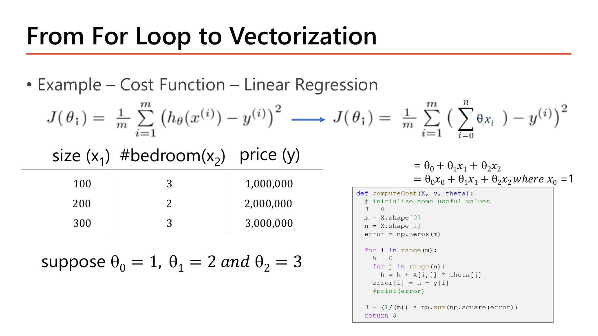
อาจารย์เอา cost function ของ linear regression มาเขียนสองแบบให้เห็นว่าเป็นสิ่งเดียวกัน: \(J(\theta) = \frac{1}{m}\sum_{i=1}^{m}\left(h_\theta(x^{(i)})-y^{(i)}\right)^2\) แล้วแทน \(h_\theta\) ด้วยผลรวมข้างในเป็น \(J(\theta) = \frac{1}{m}\sum_{i=1}^{m}\left(\sum_{i=0}^{n}\theta_i x_i - y^{(i)}\right)^2\) — คือ "ผลรวมซ้อนผลรวม" ซึ่งเวลาเขียนโค้ดตรง ๆ จะกลายเป็น for loop ซ้อน for loop พอดี. ข้อมูลตัวอย่างคือบ้าน 3 หลัง: ขนาด \(x_1\) = 100, 200, 300; จำนวนห้องนอน \(x_2\) = 3, 2, 3; ราคา \(y\) = 1,000,000 / 2,000,000 / 3,000,000 และให้ลองใช้ \(\theta_0=1, \theta_1=2, \theta_2=3\).
\(J \approx 4{,}664{,}764{,}193{,}950\) — มหาศาล เพราะ \(\theta\) ชุดนี้ทำนายหลักร้อยขณะที่ราคาจริงเป็นหลักล้าน. บทเรียนสองข้อ: (1) ค่าของ cost ไม่มีความหมายในตัวเอง มันมีไว้ให้ ลดลง; (2) เมื่อ feature มีสเกลต่างกันมาก (100–300 เทียบกับราคาหลักล้าน) ตัวเลขจะระเบิดง่าย ซึ่งเป็นเหตุผลของการทำ feature scaling ที่สอนใน Lesson 1.
โค้ดในภาพฝั่งขวาของหน้านี้คือเวอร์ชัน for loop ของ cost function ที่อาจารย์เขียนสด (โค้ดนี้อยู่ในภาพ ไม่ใช่ข้อความ):
def computeCost(X, y, theta):
# initialize some useful values
J = 0
m = X.shape[0]
n = X.shape[1]
error = np.zeros(m)
for i in range(m):
h = 0
for j in range(n):
h = h + X[i,j] * theta[j]
error[i] = h - y[i]
#print(error)
J = (1/(m)) * np.sum(np.square(error))
return J| โค้ด | ทำอะไร |
|---|---|
| def computeCost(X, y, theta): | รับเมทริกซ์ข้อมูล X (m แถว × n คอลัมน์ รวม \(x_0\)), เวกเตอร์เป้าหมาย y และพารามิเตอร์ theta แล้วคืนค่า cost หนึ่งค่า |
| m = X.shape[0] n = X.shape[1] | shape[0] = จำนวนแถว = จำนวน training example; shape[1] = จำนวนคอลัมน์ = จำนวน feature (รวม bias) — ลำดับ index นี้คือกฎ "แถวก่อน คอลัมน์หลัง" ของหน้า 27 |
| error = np.zeros(m) | จองที่เก็บค่าคลาดเคลื่อนของทุกตัวอย่าง เริ่มต้นด้วยศูนย์ m ช่อง (ต้องจองก่อนเพราะจะเขียนทีละช่องในลูป) |
| for i in range(m): | ลูปนอก: ไล่ทีละ training example \(i = 0,1,\dots,m-1\) |
| h = 0 for j in range(n): h = h + X[i,j] * theta[j] | ลูปใน: สะสมผลรวมถ่วงน้ำหนักของตัวอย่างที่ \(i\) ทีละ feature — นี่คือ dot product ที่เขียนมือ เทียบเท่ากับ \(\sum_j \theta_j x_j\) หนึ่งบรรทัด |
| error[i] = h - y[i] | เก็บส่วนต่างระหว่างคำทำนายกับค่าจริงของตัวอย่างนั้น (ยังไม่ยกกำลังสอง) |
| #print(error) | บรรทัด debug ที่อาจารย์ปิดไว้ — เปิดเมื่ออยากดูว่าค่าคลาดเคลื่อนแต่ละตัวเป็นเท่าไร |
| J = (1/(m)) * np.sum(np.square(error)) | np.square ยกกำลังสองทุกช่อง, np.sum รวมเป็นค่าเดียว, แล้วหารด้วย m ได้ค่าเฉลี่ย — ตรงกับสูตร \(J=\frac{1}{m}\sum(h-y)^2\) บนสไลด์ |
ผลลัพธ์ที่คาด: เรียก computeCost(X, y, np.array([1,2,3])) ด้วยข้อมูลราคาบ้าน 3 หลังข้างบน จะได้ค่าเดียวกับที่คำนวณมือไว้คือประมาณ 4664764193949.67. สังเกตว่าลูปซ้อนสองชั้นนี้ทำงาน \(m\times n = 3\times3 = 9\) รอบสำหรับข้อมูลจิ๋ว ๆ — ถ้าเป็นภาพ 2,352 feature กับตัวอย่าง 10,000 รูป จะกลายเป็น 23 ล้านรอบในภาษา Python ซึ่งช้ามาก จึงต้องแปลงเป็น vectorized ในหน้าถัดไป.
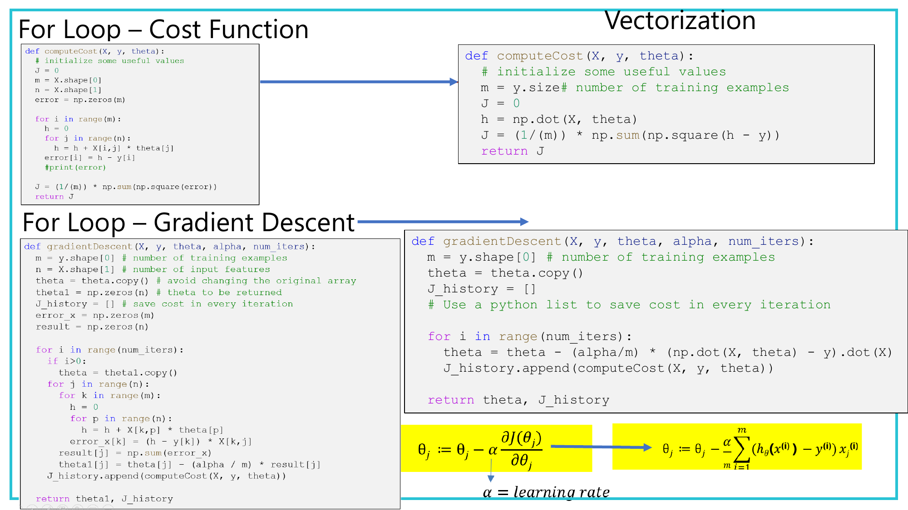
หน้านี้วางโค้ดสี่บล็อกเทียบกัน: ซ้ายคือ cost function และ gradient descent แบบ for loop, ขวาคือของเดิมที่เขียนใหม่ด้วย numpy. กรอบเหลืองล่างคือสูตรที่ทุกบล็อกกำลังทำตาม — เริ่มจากรูปทั่วไป \(\theta_j := \theta_j - \alpha\frac{\partial J(\theta_j)}{\partial \theta_j}\) โดย \(\alpha\) คือ learning rate แล้วแทนอนุพันธ์ด้วยรูปที่คำนวณได้จริง \(\theta_j := \theta_j - \frac{\alpha}{m}\sum_{i=1}^{m}\left(h_\theta(x^{(i)})-y^{(i)}\right)x_j^{(i)}\). อ่านสูตรนี้เป็นภาษาคน: "ปรับ \(\theta_j\) ลงตามสัดส่วนของ ความผิดพลาดเฉลี่ย ที่ถ่วงน้ำหนักด้วย feature ตัวที่ \(j\) ของตัวอย่างนั้น" — feature ที่ค่ามากจะดึง \(\theta\) แรงกว่า และตัวอย่างที่ทำนายพลาดมากจะมีอิทธิพลมากกว่า.
ก่อนดูเวอร์ชัน vectorized มาดูเวอร์ชัน for loop ของ gradient descent ที่อาจารย์เขียนไว้ฝั่งซ้ายก่อน (โค้ดนี้อยู่ในภาพเช่นกัน) เพื่อจะได้เห็นว่ามีลูปซ้อนกันถึงสี่ชั้น:
def gradientDescent(X, y, theta, alpha, num_iters):
m = y.shape[0] # number of training examples
n = X.shape[1] # number of input features
theta = theta.copy() # avoid changing the original array
theta1 = np.zeros(n) # theta to be returned
J_history = [] # save cost in every iteration
error_x = np.zeros(m)
result = np.zeros(n)
for i in range(num_iters):
if i>0:
theta = theta1.copy()
for j in range(n):
for k in range(m):
h = 0
for p in range(n):
h = h + X[k,p] * theta[p]
error_x[k] = (h - y[k]) * X[k,j]
result[j] = np.sum(error_x)
theta1[j] = theta[j] - (alpha / m) * result[j]
J_history.append(computeCost(X, y, theta))
return theta1, J_history| โค้ด | ทำอะไร |
|---|---|
| theta = theta.copy() | คัดลอกก่อนแก้ เพื่อไม่ให้ array ต้นฉบับของผู้เรียกถูกเปลี่ยนตาม (numpy ส่ง array แบบอ้างอิง ไม่ใช่สำเนา) |
| theta1 = np.zeros(n) | ที่เก็บ \(\theta\) ชุดใหม่ — แยกจากชุดเก่าเพราะต้องอัปเดตทุก \(\theta_j\) พร้อมกันจาก \(\theta\) เดิม (simultaneous update) ไม่ใช่ทยอยใช้ค่าที่เพิ่งเปลี่ยน |
| J_history = [] | list เปล่าไว้เก็บ cost ของทุกรอบ ใช้พล็อตดูว่า cost ลดลงจริงไหม |
| for i in range(num_iters): | ลูปชั้นที่ 1: จำนวนรอบการอัปเดต (iteration) ที่เรากำหนด |
| if i>0: theta = theta1.copy() | ตั้งแต่รอบที่สองเป็นต้นไป ให้ใช้ \(\theta\) ที่ได้จากรอบก่อนเป็นจุดตั้งต้น |
| for j in range(n): | ลูปชั้นที่ 2: ไล่ปรับพารามิเตอร์ทีละตัว \(\theta_j\) |
| for k in range(m): … for p in range(n): | ลูปชั้นที่ 3 และ 4: สำหรับตัวอย่างที่ \(k\) คำนวณ \(h\) ด้วยการวนคูณทีละ feature \(p\) — คือ dot product ที่เขียนมืออีกครั้ง |
| error_x[k] = (h - y[k]) * X[k,j] | ความผิดพลาดของตัวอย่าง \(k\) คูณกับ feature ตัวที่ \(j\) ของตัวอย่างนั้น = เทอมข้างในผลรวมของสูตร update |
| result[j] = np.sum(error_x) | รวมทุกตัวอย่างให้เป็น gradient ของ \(\theta_j\) |
| theta1[j] = theta[j] - (alpha / m) * result[j] | ก้าวลงเขาหนึ่งก้าวตามสูตร \(\theta_j := \theta_j - \frac{\alpha}{m}\sum(h-y)x_j\) |
| return theta1, J_history | คืนพารามิเตอร์ชุดสุดท้ายและประวัติ cost ทั้งหมด |
ผลลัพธ์ที่คาด: ฟังก์ชันนี้ให้ค่าเท่ากับเวอร์ชัน vectorized ทุกประการ (เช่นทดสอบกับข้อมูลหน้า 41: \(X=\begin{bmatrix}1&0&1\\1&0&2\\1&0&3\end{bmatrix}\), \(y=[4,7,10]\), \(\theta\) เริ่มที่ศูนย์, \(\alpha=0.1\) รอบแรกได้ \(\theta=[0.7,\ 0,\ 1.6]\)) แต่ใช้ลูป Python ถึง \(\text{num\_iters}\times n\times m\times n\) รอบ ขณะที่เวอร์ชันข้างล่างใช้ \(\text{num\_iters}\) รอบเท่านั้น.
def gradientDescent(X, y, theta, alpha, num_iters):
m = y.shape[0] # number of training examples
theta = theta.copy()
J_history = []
# Use a python list to save cost in every iteration
for i in range(num_iters):
theta = theta - (alpha/m) * (np.dot(X, theta) - y).dot(X)
J_history.append(computeCost(X, y, theta))
return theta, J_history
def computeCost(X, y, theta):
# initialize some useful values
m = y.size # number of training examples
J = 0
h = np.dot(X, theta)
J = (1/(m)) * np.sum(np.square(h - y))
return J| โค้ด | ทำอะไร |
|---|---|
| m = y.shape[0] | จำนวน training example อ่านจากความยาวของ y (ใน computeCost ใช้ y.size ซึ่งให้ผลเท่ากันสำหรับ array 1 มิติ) |
| h = np.dot(X, theta) | คำทำนายของทุกตัวอย่างพร้อมกัน: \((m\times(n{+}1))\cdot((n{+}1)\times1)\) ⇒ เวกเตอร์ยาว m — แทนลูปสองชั้นของหน้า 42 ทั้งก้อน |
| J = (1/(m)) * np.sum(np.square(h - y)) | h - y ลบทีละช่องได้เวกเตอร์ความผิดพลาด, np.square ยกกำลังสองทีละช่อง, np.sum ยุบเป็นค่าเดียว แล้วเฉลี่ยด้วย m |
| (np.dot(X, theta) - y).dot(X) | หัวใจของการ vectorize: เวกเตอร์ความผิดพลาด \((h-y)\) ขนาด \((m,)\) dot กับ \(X\) ขนาด \((m\times(n{+}1))\) ⇒ ได้เวกเตอร์ขนาด \((n{+}1,)\) ซึ่งแต่ละช่องคือ \(\sum_i (h^{(i)}-y^{(i)})x_j^{(i)}\) ของ \(\theta_j\) นั้นพอดี — คือ gradient ครบทุกตัวในคำสั่งเดียว |
| theta = theta - (alpha/m) * (...) | คูณ gradient ด้วยสเกลาร์ \(\alpha/m\) แล้วลบออกจาก \(\theta\) ทั้งเวกเตอร์ — อัปเดตทุกพารามิเตอร์พร้อมกันโดยอัตโนมัติ (ไม่ต้องทำ theta1 แยกเหมือนเวอร์ชันลูป) |
| J_history.append(computeCost(X, y, theta)) | เก็บ cost หลังอัปเดตของรอบนั้นไว้ดูแนวโน้ม; ถ้า cost ไม่ลดลงแปลว่า \(\alpha\) ใหญ่เกินไป |
| return theta, J_history | คืน \(\theta\) ที่เรียนได้ และประวัติ cost — รูปแบบเดียวกับที่ Lesson 3 จะใช้เทรนโครงข่ายจริง |
cost ลดจาก \(J=55.0\) (ตอน \(\theta=0\)) เหลือ \(10.92\) หลังก้าวเดียว และถ้าวนต่ออีกสองรอบจะได้ 2.17 แล้ว 0.44 — เห็นได้ว่า \(\theta_1\) ยังเป็น 0 ตลอดเพราะคอลัมน์ \(x_1\) เป็นศูนย์ทั้งหมด จึงไม่มี gradient มาดัน.
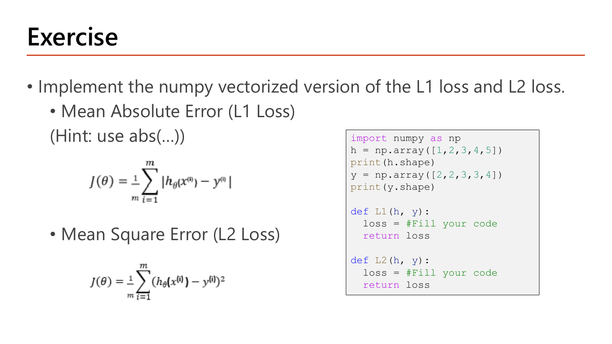
แบบฝึกหัดสุดท้ายของส่วนนี้: ให้เขียน numpy เวอร์ชัน vectorized ของ L1 loss และ L2 loss โดยอาจารย์ให้สูตรมาแล้วคือ Mean Absolute Error (L1) \(J(\theta)=\frac{1}{m}\sum_{i=1}^{m}\left|h_\theta(x^{(i)})-y^{(i)}\right|\) พร้อมใบ้ว่าให้ใช้ abs(...) และ Mean Square Error (L2) \(J(\theta)=\frac{1}{m}\sum_{i=1}^{m}\left(h_\theta(x^{(i)})-y^{(i)}\right)^2\). โค้ดตั้งต้นให้ \(h=[1,2,3,4,5]\) กับ \(y=[2,2,3,3,4]\) และเว้นบรรทัด loss = #Fill your code ไว้ให้เติม:
import numpy as np
h = np.array([1,2,3,4,5])
print(h.shape)
y = np.array([2,2,3,3,4])
print(y.shape)
def L1(h, y):
loss = #Fill your code
return loss
def L2(h, y):
loss = #Fill your code
return loss| โค้ด | ทำอะไร |
|---|---|
| h = np.array([1,2,3,4,5]) | เวกเตอร์คำทำนายของโมเดล 5 ตัวอย่าง shape (5,) |
| print(h.shape) | พิมพ์ (5,) — อาจารย์ให้พิมพ์ก่อนเพื่อยืนยันว่าทั้ง h และ y เป็น array 1 มิติขนาดเท่ากัน (ถ้าไม่เท่ากัน การลบจะ broadcast ผิดหรือ error) |
| y = np.array([2,2,3,3,4]) | ค่าจริง 5 ตัว — คู่กับ h ตำแหน่งต่อตำแหน่ง |
| def L1(h, y): / def L2(h, y): | ฟังก์ชันที่ต้องเขียนเอง คืนค่า loss เป็นตัวเลขตัวเดียว (สเกลาร์) ไม่ใช่ array |
| loss = #Fill your code | ช่องว่างที่เป็นโจทย์ — ต้องเขียนให้ "ลบ → แปลงเป็นค่าบวก (abs หรือยกกำลังสอง) → รวม → หารด้วยจำนวนตัวอย่าง" ในบรรทัดเดียวโดยไม่ใช้ for loop |
เฉลยที่ถูกต้อง เขียนแบบ vectorized ล้วน ไม่มีลูป:
def L1(h, y):
loss = (1/h.size) * np.sum(np.abs(h - y))
return loss
def L2(h, y):
loss = (1/h.size) * np.sum(np.square(h - y))
return loss
print(L1(h, y))
print(L2(h, y))| โค้ด | ทำอะไร |
|---|---|
| h - y | ลบทีละช่อง (element-wise) ได้ [-1 0 0 1 1] — ยังมีทั้งบวกและลบ จึงห้ามรวมทันที ไม่งั้นค่าลบจะหักล้างค่าบวก |
| np.abs(h - y) | ทำให้ทุกช่องเป็นบวก ได้ [1 0 0 1 1] ตรงกับสัญลักษณ์ \(|\cdot|\) ในสูตร L1 (ตามที่อาจารย์ใบ้ให้ใช้ abs) |
| np.square(h - y) | ยกกำลังสองทุกช่อง ได้ [1 0 0 1 1] เช่นกันในกรณีนี้ เพราะส่วนต่างเป็น 0 หรือ ±1 พอดี — แต่โดยทั่วไปสองอันนี้ไม่เท่ากัน |
| np.sum(...) | รวมทุกช่องเป็นค่าเดียว ได้ 3 ทั้งสองกรณี |
| (1/h.size) * ... | หารด้วยจำนวนตัวอย่าง \(m=5\) ตามที่สูตรมี \(\frac{1}{m}\) นำหน้า (h.size = 5; เขียน len(h) หรือ y.shape[0] ก็ได้ผลเท่ากัน) |
| return loss | คืนค่าสเกลาร์ — ถ้าลืม np.sum ฟังก์ชันจะคืน array 5 ช่องซึ่งผิดโจทย์ |
ผลลัพธ์ที่คาด: 0.6 ทั้งสองบรรทัด เพราะส่วนต่าง \(h-y = [-1,0,0,1,1]\) ⇒ L1 \(= \frac{1+0+0+1+1}{5} = 0.6\) และ L2 \(= \frac{1+0+0+1+1}{5} = 0.6\) (บังเอิญเท่ากันเพราะ \(1^2 = |1|\); ถ้าเปลี่ยน \(h_5\) เป็น 6 ส่วนต่างจะเป็น 2 ⇒ L1 \(=\frac{4}{5}=0.8\) แต่ L2 \(=\frac{1+0+0+1+4}{5}=1.2\) ต่างกันทันที).
np.dot(X, theta) (ลำดับ argument สลับไม่ได้), (np.dot(X,theta) - y).dot(X) คือ gradient ทั้งชุด, np.sum(np.square(h - y)) สำหรับ L2 กับ np.sum(np.abs(h - y)) สำหรับ L1, และตัวหาร 1/m ที่ห้ามลืม. ตัวลวงยอดฮิตคือ np.square(np.sum(h - y)) ซึ่งสลับลำดับ sum กับ square ทำให้ค่าลบหักล้างกันก่อนแล้วค่อยยกกำลังสอง (ได้ 1 แทนที่จะเป็น 3 ในตัวอย่างนี้).กลับมาที่โครงข่ายอีกครั้ง คราวนี้ด้วยเครื่องมือครบมือ. อาจารย์วางแผนผังเต็มของ shallow network ให้ดูก่อน แล้วค่อยพิสูจน์ด้วยตัวอย่าง XNOR ว่า "หลาย node หลายชั้น" ทำสิ่งที่ node เดียวทำไม่ได้จริง.
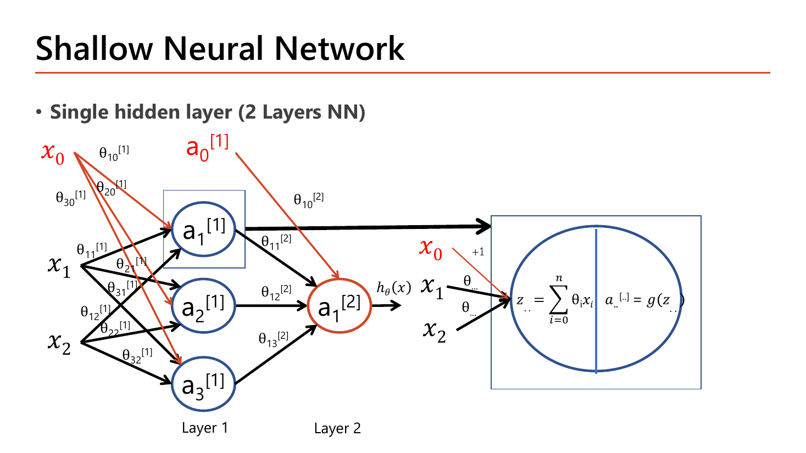
อาจารย์เรียกโครงข่ายนี้ว่า "Single hidden layer (2 Layers NN)" — นับเฉพาะชั้นที่มีพารามิเตอร์ คือ layer 1 (hidden 3 node) และ layer 2 (output 1 node) ส่วน input ไม่นับ. สิ่งที่ต้องอ่านให้ออกคือ bias มีสองตัว ไม่ใช่ตัวเดียว: \(x_0\) (สีแดงด้านซ้าย) เป็น bias ของ layer 1 ที่วิ่งเข้าทุก hidden node ผ่าน \(\theta_{10}^{[1]}, \theta_{20}^{[1]}, \theta_{30}^{[1]}\) และ \(a_0^{[1]}\) (สีแดงด้านบน ซึ่งอาจารย์ทำสีเน้นไว้) เป็น bias ของ layer 2 ที่วิ่งเข้า output node ผ่าน \(\theta_{10}^{[2]}\) — ทั้งคู่มีค่าคงที่ \(+1\) เสมอ (สไลด์เขียนกำกับ "+1" ไว้ในกรอบขยายด้วย). นับพารามิเตอร์ทั้งหมดของโครงข่ายนี้: layer 1 มี \(3\times(2+1) = 9\) ตัว (\(\theta_{10}^{[1]}\) ถึง \(\theta_{32}^{[1]}\)) และ layer 2 มี \(1\times(3+1) = 4\) ตัว (\(\theta_{10}^{[2]}, \theta_{11}^{[2]}, \theta_{12}^{[2]}, \theta_{13}^{[2]}\)) รวม 13 ตัว. กรอบขยายทางขวาย้ำสูตรของทุก node อีกครั้ง: \(z = \sum_{i=0}^{n}\theta_i x_i\) แล้ว \(a = g(z)\).

เป้าหมายคือสร้าง XNOR ซึ่งให้ผลเป็น 1 เมื่อ input ทั้งสองเหมือนกัน (ทั้งคู่เป็น 0 หรือทั้งคู่เป็น 1) — มันคือสิ่งตรงข้ามกับ XOR ที่ Perceptron เดี่ยวแก้ไม่ได้ในหน้า 9. วิธีของอาจารย์คือประกอบจาก gate ที่เรามีแล้ว ตามสูตรในแผนผังวงจร \(Q = (A\cdot B) + (\bar{A}\cdot\bar{B})\) อ่านว่า "(ทั้งคู่เป็น 1) หรือ (ทั้งคู่เป็น 0)". ตารางสีบนสไลด์ไล่ค่าครบทั้ง 4 แถว:
| \(x_1\) | \(x_2\) | \(x_1\wedge x_2\) | \(\sim x_1\) | \(\sim x_2\) | \(\sim x_1 \wedge \sim x_2\) | \(h_\theta(x)\) |
|---|---|---|---|---|---|---|
| 0 | 0 | 0 | 1 | 1 | 1 | 1 |
| 0 | 1 | 0 | 1 | 0 | 0 | 0 |
| 1 | 0 | 0 | 0 | 1 | 0 | 0 |
| 1 | 1 | 1 | 0 | 0 | 0 | 1 |
อ่านตารางทีละแถวให้เข้าใจกลไก: แถว \((0,0)\) คอลัมน์ AND ได้ 0 แต่คอลัมน์ \(\sim x_1 \wedge \sim x_2\) ได้ 1 (เพราะ NOT ของ 0 คือ 1 ทั้งคู่) ⇒ เมื่อเอาสองคอลัมน์นี้มา OR กันจึงได้ \(h=1\); แถว \((0,1)\) ทั้งสองคอลัมน์ได้ 0 ⇒ \(h=0\); แถว \((1,1)\) คอลัมน์ AND ได้ 1 ⇒ \(h=1\). ผลรวมคือ \([1,0,0,1]\) = XNOR พอดี. จุดสำคัญคือ เราต้องมีสองเงื่อนไขทำงานคู่ขนานกัน (ตรวจ "1 ทั้งคู่" กับตรวจ "0 ทั้งคู่") ซึ่งก็คือเหตุผลที่ต้องมี hidden layer ที่มี 2 node.

หน้านี้ให้ \(\theta\) ครบทั้งสาม gate ที่จะเอามาต่อกัน: AND \((\theta_0,\theta_1,\theta_2)=(-30,20,20)\), OR \((-10,20,20)\), และ gate ใหม่ที่เพิ่งต้องใช้คือ (NOT \(x_1\)) AND (NOT \(x_2\)) ซึ่งใช้ \((10,-20,-20)\). ลองตรวจ gate ตัวที่สามด้วยตัวเลข: ที่ \((0,0)\) ได้ \(z=10\) ⇒ \(g(10)\approx1\) ✓ (ตรงเงื่อนไข "0 ทั้งคู่"), ที่ \((0,1)\) หรือ \((1,0)\) ได้ \(z=10-20=-10\) ⇒ \(\approx0\), และที่ \((1,1)\) ได้ \(z=10-40=-30\) ⇒ \(\approx0\). สังเกตโครงสร้างของ \(\theta\): bias เป็นบวก (\(+10\)) ส่วน weight เป็นลบทั้งคู่ (\(-20\)) — ตรงข้ามกับ AND ทุกเครื่องหมาย ซึ่งสมเหตุสมผลเพราะมันคือ "AND ของค่าที่ถูกกลับด้าน". ทีนี้ประกอบเป็นโครงข่าย 2 ชั้น: hidden node ตัวที่ 1 = AND, hidden node ตัวที่ 2 = (NOT \(x_1\)) AND (NOT \(x_2\)), และ output node = OR ของสอง hidden นั้น ⇒ \(z^{[2]} = -10 + 20a_1^{[1]} + 20a_2^{[1]}\).
สมมาตรกับขั้นที่ 2 ทุกประการ (weight ของ \(x_1, x_2\) เท่ากันในทั้งสอง gate) ⇒ \(h \approx 0\)
\(h = [1,0,0,1]\) ตรงกับตารางความจริง XNOR ในหน้า 46 เป๊ะ. หัวใจคือ hidden สอง node "ตอบคนละคำถาม" (ทั้งคู่เป็น 1 ไหม / ทั้งคู่เป็น 0 ไหม) แล้ว output แค่ OR ผลของทั้งสอง.
นี่คือปลายทางของบท และเป็นทักษะที่ต้องทำได้ในห้องสอบภายในไม่กี่นาที: ให้ \(\theta\) กับ \(x\) มา แล้วเดินคำนวณจาก input จนถึง \(h_\theta(x)\).

หน้า 48 คือโจทย์: โครงข่ายเดียวกับหน้า 45 (input \(x_1,x_2\) + bias \(x_0\) → hidden 3 node → output 1 node พร้อม bias \(a_0^{[1]}\)) โดยอาจารย์เว้นที่ว่างไว้ใต้หัวข้อ "Computation on layer 1" และ "Computation on layer 2" ให้เราเขียนสมการเอง. ก่อนดูเฉลยลองนึกกฎสองข้อที่ใช้: (1) ทุก node ทำสองขั้นเสมอคือ \(z\) แล้ว \(a\); (2) index ของ \(\theta\) อ่านว่า "ปลายทางก่อน ต้นทางหลัง" ดังนั้นสมการของ node ที่ 2 ใน layer 1 ต้องใช้ \(\theta_{2\ast}^{[1]}\) ทั้งหมด.
![Forward Computation Solution slide: layer 1 equations z1[1] = theta10[1] + theta11[1] x1 + theta12[1] x2 with a1[1] = g(z1[1]), and similarly for nodes 2 and 3, then layer 2 with z1[2] = theta10[2] + theta11[2] a1[1] + theta12[2] a2[1] + theta13[2] a3[1] and h(x) = a1[2] = g(z1[2])](../assets/slides/dl2-p49-forward-computation-solution.png)
เฉลยของอาจารย์เขียนครบทุกบรรทัด และนี่คือชุดสมการที่ต้องจำรูปแบบให้ได้ — layer 1 ใช้ \(x\) ดิบเป็น input:
$$\begin{aligned} z_1^{[1]} &= \theta_{10}^{[1]} + \theta_{11}^{[1]}x_1 + \theta_{12}^{[1]}x_2, & a_1^{[1]} &= g(z_1^{[1]})\\ z_2^{[1]} &= \theta_{20}^{[1]} + \theta_{21}^{[1]}x_1 + \theta_{22}^{[1]}x_2, & a_2^{[1]} &= g(z_2^{[1]})\\ z_3^{[1]} &= \theta_{30}^{[1]} + \theta_{31}^{[1]}x_1 + \theta_{32}^{[1]}x_2, & a_3^{[1]} &= g(z_3^{[1]}) \end{aligned}$$layer 2 ใช้ activation ของ layer 1 เป็น input (ไม่ใช่ \(x\) อีกแล้ว) และมี 4 เทอมเพราะรับจาก 3 node บวก bias:
$$z_1^{[2]} = \theta_{10}^{[2]} + \theta_{11}^{[2]}a_1^{[1]} + \theta_{12}^{[2]}a_2^{[1]} + \theta_{13}^{[2]}a_3^{[1]},\qquad h_\theta(x) = a_1^{[2]} = g\!\left(z_1^{[2]}\right)$$รูปแบบที่ซ้ำทุกชั้น: "คูณ weight บวก bias ได้ \(z\) → ผ่าน \(g\) ได้ \(a\)" แล้วส่ง \(a\) เป็น input ของชั้นถัดไป
เขียนย่อเป็นเมทริกซ์ด้วยกฎจากหัวข้อ 5B (ทำทั้ง 3 node ของ layer 1 พร้อมกัน) โดย \(\theta^{[1]}\) มีขนาด \(3\times3\) และ \(a^{[0]}=[1,\ x_1,\ x_2]^\top\):
$$z^{[1]} = \theta^{[1]}a^{[0]},\quad a^{[1]} = g(z^{[1]}),\qquad z^{[2]} = \theta^{[2]}\begin{bmatrix}1\\ a^{[1]}\end{bmatrix},\quad h = g(z^{[2]})$$\(h_\theta(x) \approx 0.497\) ⇒ ถ้าใช้เกณฑ์ 0.5 จะทำนาย \(y=0\) (พลาดไปนิดเดียว). ทั้งกระบวนการคือ "คูณ+บวก" สลับกับ "sigmoid" อย่างละ 2 รอบ — ถ้าทำได้ 13 พารามิเตอร์นี้ ก็ทำได้กับโครงข่ายที่มีล้านพารามิเตอร์เช่นกัน เพราะสูตรไม่เปลี่ยน.
ไล่ทุกหน้าที่เป็นเนื้อหาของบทนี้ (หน้า 1-49) — หน้า 50-98 ของ Lecture2.pdf คือ Lecture3.pdf ทั้งชุด (สไลด์เดียวกันเป๊ะ) ดูภาคผนวกของ Lesson 3 แทน.
| หน้า | เนื้อหา | สถานะ |
|---|---|---|
| 1 | ปก Part 1-Neural Network: Deep Learning (รหัสวิชา เวลาเรียน) | etc — สไลด์ปก/ข้อมูลบริหารวิชา ไม่มีเนื้อหาวิชาการ |
| 2 | Complex Non-linear Tasks — spiral dataset, polynomial ระเบิดเป็น 5,150 features | ✓ หัวข้อ 1 (รูป + คำนวณจำนวนเทอมเต็ม) |
| 3 | Computer Vision Tasks — 28×28 ขาวดำ/RGB นับ feature | ✓ หัวข้อ 1 (รูป + คำนวณ 784 / 2,352) |
| 4–7 | ANNs (computation, biological brain, universal models), From Biological to Artificial NN (6 layers), Neural Network Intuition (dense layer, housing price), Why Can NN Model Complex Patterns (5 เหตุผล) | ✓ หัวข้อ 1A (รูปครบทุกหน้า + กล่องต้องรู้ก่อนเรื่อง nonlinearity) |
| 8–10 | Brief History of ANNs 1–3: McCulloch & Pitts (1943), Perceptron/TLU (1957), MLP แก้ XOR (1969) | ✓ หัวข้อ 2 (รูปครบ + คำนวณ XOR ทั้ง 4 กรณี) |
| 11–13 | Neural Network Structure (หน้าที่ของ 3 layer), Notation (layer/node), Notation 2 (bias unit, activation function g, weight) | ✓ หัวข้อ 3 (รูปครบ + ตารางสัญกรณ์ + คำนวณขนาด θ) |
| 14 | Small Neural Network — linear/logistic regression เป็น NN node เดียว | ✓ หัวข้อ 3A (รูป + ตัวอย่างตัวเลขเทียบสอง activation) |
| 15–18 | Example on Computational Logic (ตรรกศาสตร์/ประพจน์ + truth table), Logic Operator AND, OR, NOT | ✓ หัวข้อ 4 (รูปครบ + เฉลยช่องว่างของ OR และ NOT) |
| 19 | Vectorization — นิยาม element-wise + โค้ดเทียบเวลา for loop กับ numpy | ✓ หัวข้อ 5 (รูป + โค้ดอธิบายทีละบรรทัด) |
| 20–26 | Linear Algebra, Vector (magnitude/direction), Vector Operations, Properties, Geometric Interpretation (norm/unit vector), Exercise (Euclidean distance), The Dot Product + โค้ด | ✓ หัวข้อ 5A (รูปครบ + เฉลยแบบฝึกหัดหน้า 24, 25, 26) |
| 27–37 | Matrix, Example (indexing), Matrix Operations (บวก/ลบ), Scalar multiplication, Matrix-vector, Example, Matrix-matrix, Example + โค้ด, Multiplication Properties, Transpose + โค้ด, Identity Matrix | ✓ หัวข้อ 5B (รูปครบทุกหน้า + เฉลยโจทย์ที่เว้นว่างทั้งหมด) |
| 38–44 | Vectorization for Linear Regression (one example / >one example), Example, From For Loop to Vectorization (ราคาบ้าน + โค้ดในภาพ), โค้ด cost/gradient descent สองเวอร์ชัน, Exercise L1/L2 | ✓ หัวข้อ 6 (รูปครบ + โค้ด 4 บล็อกพร้อมเฉลย L1/L2) |
| 45–47 | Shallow Neural Network (diagram เต็ม), XNOR using AND OR NOT (truth table), XNOR (2) — θ ของสาม gate | ✓ หัวข้อ 7 (รูปครบ + forward ของ XNOR ทั้ง 4 กรณี) |
| 48–49 | Forward Computation (โจทย์เว้นว่าง) และ Forward Computation (Solution) | ✓ หัวข้อ 8 (รูปครบ + ตัวอย่างคำนวณเต็มด้วยตัวเลขจริง) |
สงสัยตรงไหน ถามได้เลยในแชท — ผมเป็นผู้สอนของคุณ ถามซ้ำได้ ถามลึกได้ ไม่ต้องเกรงใจ.